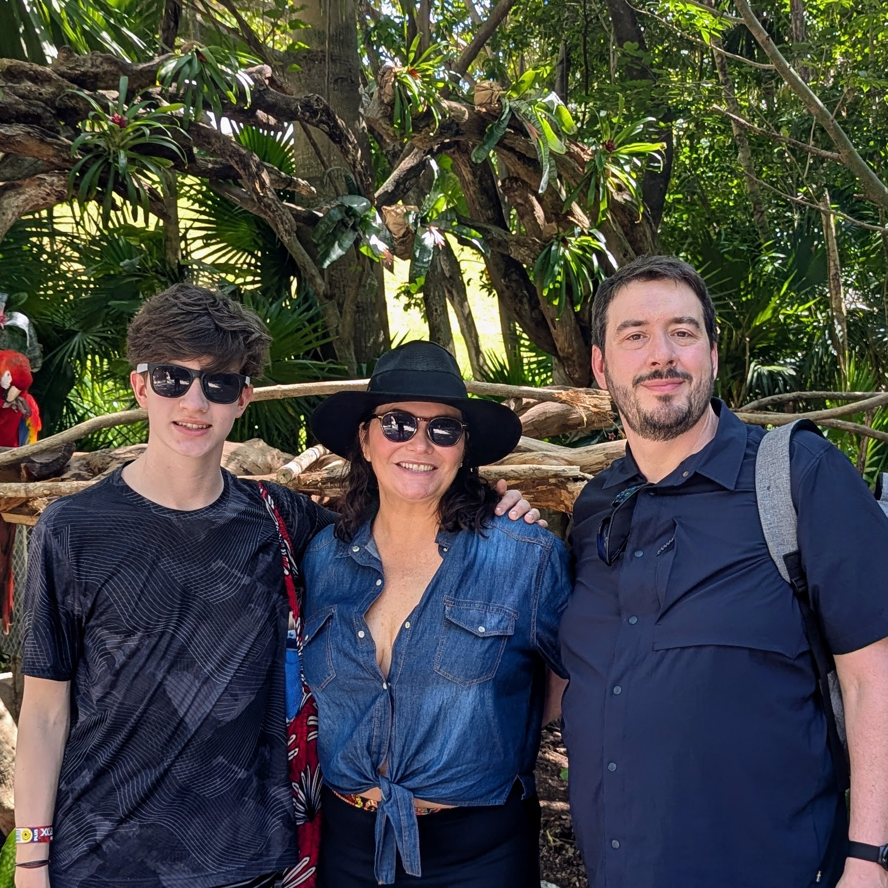

<!DOCTYPE html>
<html lang="en">
<head>
<meta charset="UTF-8">
<meta name="viewport" content="width=device-width, initial-scale=1.0, maximum-scale=1.0, user-scalable=no">
<meta name="apple-mobile-web-app-capable" content="yes">
<meta name="apple-mobile-web-app-status-bar-style" content="default">
<meta name="apple-mobile-web-app-title" content="Maui 2026">
<meta name="theme-color" content="#faf4eb">
<link rel="manifest" href="manifest.json">
<link rel="apple-touch-icon" href="icon.svg">
<title>Maui 2026</title>
<script src="vendor/react.production.min.js"></script>
<script src="vendor/react-dom.production.min.js"></script>
<script src="vendor/babel.min.js"></script>
<style>
@font-face{font-family:'Cormorant Garamond';font-style:normal;font-weight:400;font-display:swap;src:url(fonts/cormorant-garamond-latin-ext-400-normal.woff2) format('woff2');unicode-range:U+0100-02BA,U+02BD-02C5,U+02C7-02CC,U+02CE-02D7,U+02DD-02FF,U+0304,U+0308,U+0329,U+1D00-1DBF,U+1E00-1E9F,U+1EF2-1EFF,U+2020,U+20A0-20AB,U+20AD-20C0,U+2113,U+2C60-2C7F,U+A720-A7FF}
@font-face{font-family:'Cormorant Garamond';font-style:normal;font-weight:400;font-display:swap;src:url(fonts/cormorant-garamond-latin-400-normal.woff2) format('woff2');unicode-range:U+0000-00FF,U+0131,U+0152-0153,U+02BB-02BC,U+02C6,U+02DA,U+02DC,U+0304,U+0308,U+0329,U+2000-206F,U+20AC,U+2122,U+2191,U+2193,U+2212,U+2215,U+FEFF,U+FFFD}
@font-face{font-family:'Cormorant Garamond';font-style:normal;font-weight:600;font-display:swap;src:url(fonts/cormorant-garamond-latin-ext-600-normal.woff2) format('woff2');unicode-range:U+0100-02BA,U+02BD-02C5,U+02C7-02CC,U+02CE-02D7,U+02DD-02FF,U+0304,U+0308,U+0329,U+1D00-1DBF,U+1E00-1E9F,U+1EF2-1EFF,U+2020,U+20A0-20AB,U+20AD-20C0,U+2113,U+2C60-2C7F,U+A720-A7FF}
@font-face{font-family:'Cormorant Garamond';font-style:normal;font-weight:600;font-display:swap;src:url(fonts/cormorant-garamond-latin-600-normal.woff2) format('woff2');unicode-range:U+0000-00FF,U+0131,U+0152-0153,U+02BB-02BC,U+02C6,U+02DA,U+02DC,U+0304,U+0308,U+0329,U+2000-206F,U+20AC,U+2122,U+2191,U+2193,U+2212,U+2215,U+FEFF,U+FFFD}
@font-face{font-family:'Cormorant Garamond';font-style:normal;font-weight:700;font-display:swap;src:url(fonts/cormorant-garamond-latin-ext-700-normal.woff2) format('woff2');unicode-range:U+0100-02BA,U+02BD-02C5,U+02C7-02CC,U+02CE-02D7,U+02DD-02FF,U+0304,U+0308,U+0329,U+1D00-1DBF,U+1E00-1E9F,U+1EF2-1EFF,U+2020,U+20A0-20AB,U+20AD-20C0,U+2113,U+2C60-2C7F,U+A720-A7FF}
@font-face{font-family:'Cormorant Garamond';font-style:normal;font-weight:700;font-display:swap;src:url(fonts/cormorant-garamond-latin-700-normal.woff2) format('woff2');unicode-range:U+0000-00FF,U+0131,U+0152-0153,U+02BB-02BC,U+02C6,U+02DA,U+02DC,U+0304,U+0308,U+0329,U+2000-206F,U+20AC,U+2122,U+2191,U+2193,U+2212,U+2215,U+FEFF,U+FFFD}
@font-face{font-family:'Cormorant Garamond';font-style:italic;font-weight:400;font-display:swap;src:url(fonts/cormorant-garamond-latin-ext-400-italic.woff2) format('woff2');unicode-range:U+0100-02BA,U+02BD-02C5,U+02C7-02CC,U+02CE-02D7,U+02DD-02FF,U+0304,U+0308,U+0329,U+1D00-1DBF,U+1E00-1E9F,U+1EF2-1EFF,U+2020,U+20A0-20AB,U+20AD-20C0,U+2113,U+2C60-2C7F,U+A720-A7FF}
@font-face{font-family:'Cormorant Garamond';font-style:italic;font-weight:400;font-display:swap;src:url(fonts/cormorant-garamond-latin-400-italic.woff2) format('woff2');unicode-range:U+0000-00FF,U+0131,U+0152-0153,U+02BB-02BC,U+02C6,U+02DA,U+02DC,U+0304,U+0308,U+0329,U+2000-206F,U+20AC,U+2122,U+2191,U+2193,U+2212,U+2215,U+FEFF,U+FFFD}
@font-face{font-family:'Cormorant Garamond';font-style:italic;font-weight:600;font-display:swap;src:url(fonts/cormorant-garamond-latin-ext-600-italic.woff2) format('woff2');unicode-range:U+0100-02BA,U+02BD-02C5,U+02C7-02CC,U+02CE-02D7,U+02DD-02FF,U+0304,U+0308,U+0329,U+1D00-1DBF,U+1E00-1E9F,U+1EF2-1EFF,U+2020,U+20A0-20AB,U+20AD-20C0,U+2113,U+2C60-2C7F,U+A720-A7FF}
@font-face{font-family:'Cormorant Garamond';font-style:italic;font-weight:600;font-display:swap;src:url(fonts/cormorant-garamond-latin-600-italic.woff2) format('woff2');unicode-range:U+0000-00FF,U+0131,U+0152-0153,U+02BB-02BC,U+02C6,U+02DA,U+02DC,U+0304,U+0308,U+0329,U+2000-206F,U+20AC,U+2122,U+2191,U+2193,U+2212,U+2215,U+FEFF,U+FFFD}
@font-face{font-family:'Cormorant Garamond';font-style:italic;font-weight:700;font-display:swap;src:url(fonts/cormorant-garamond-latin-ext-700-italic.woff2) format('woff2');unicode-range:U+0100-02BA,U+02BD-02C5,U+02C7-02CC,U+02CE-02D7,U+02DD-02FF,U+0304,U+0308,U+0329,U+1D00-1DBF,U+1E00-1E9F,U+1EF2-1EFF,U+2020,U+20A0-20AB,U+20AD-20C0,U+2113,U+2C60-2C7F,U+A720-A7FF}
@font-face{font-family:'Cormorant Garamond';font-style:italic;font-weight:700;font-display:swap;src:url(fonts/cormorant-garamond-latin-700-italic.woff2) format('woff2');unicode-range:U+0000-00FF,U+0131,U+0152-0153,U+02BB-02BC,U+02C6,U+02DA,U+02DC,U+0304,U+0308,U+0329,U+2000-206F,U+20AC,U+2122,U+2191,U+2193,U+2212,U+2215,U+FEFF,U+FFFD}
@font-face{font-family:'Didact Gothic';font-style:normal;font-weight:400;font-display:swap;src:url(fonts/didact-gothic-latin-ext-400-normal.woff2) format('woff2');unicode-range:U+0100-02BA,U+02BD-02C5,U+02C7-02CC,U+02CE-02D7,U+02DD-02FF,U+0304,U+0308,U+0329,U+1D00-1DBF,U+1E00-1E9F,U+1EF2-1EFF,U+2020,U+20A0-20AB,U+20AD-20C0,U+2113,U+2C60-2C7F,U+A720-A7FF}
@font-face{font-family:'Didact Gothic';font-style:normal;font-weight:400;font-display:swap;src:url(fonts/didact-gothic-latin-400-normal.woff2) format('woff2');unicode-range:U+0000-00FF,U+0131,U+0152-0153,U+02BB-02BC,U+02C6,U+02DA,U+02DC,U+0304,U+0308,U+0329,U+2000-206F,U+20AC,U+2122,U+2191,U+2193,U+2212,U+2215,U+FEFF,U+FFFD}
@font-face{font-family:'Dancing Script';font-style:normal;font-weight:400;font-display:swap;src:url(fonts/dancing-script-latin-ext-400-normal.woff2) format('woff2');unicode-range:U+0100-02BA,U+02BD-02C5,U+02C7-02CC,U+02CE-02D7,U+02DD-02FF,U+0304,U+0308,U+0329,U+1D00-1DBF,U+1E00-1E9F,U+1EF2-1EFF,U+2020,U+20A0-20AB,U+20AD-20C0,U+2113,U+2C60-2C7F,U+A720-A7FF}
@font-face{font-family:'Dancing Script';font-style:normal;font-weight:400;font-display:swap;src:url(fonts/dancing-script-latin-400-normal.woff2) format('woff2');unicode-range:U+0000-00FF,U+0131,U+0152-0153,U+02BB-02BC,U+02C6,U+02DA,U+02DC,U+0304,U+0308,U+0329,U+2000-206F,U+20AC,U+2122,U+2191,U+2193,U+2212,U+2215,U+FEFF,U+FFFD}
@font-face{font-family:'Dancing Script';font-style:normal;font-weight:700;font-display:swap;src:url(fonts/dancing-script-latin-ext-700-normal.woff2) format('woff2');unicode-range:U+0100-02BA,U+02BD-02C5,U+02C7-02CC,U+02CE-02D7,U+02DD-02FF,U+0304,U+0308,U+0329,U+1D00-1DBF,U+1E00-1E9F,U+1EF2-1EFF,U+2020,U+20A0-20AB,U+20AD-20C0,U+2113,U+2C60-2C7F,U+A720-A7FF}
@font-face{font-family:'Dancing Script';font-style:normal;font-weight:700;font-display:swap;src:url(fonts/dancing-script-latin-700-normal.woff2) format('woff2');unicode-range:U+0000-00FF,U+0131,U+0152-0153,U+02BB-02BC,U+02C6,U+02DA,U+02DC,U+0304,U+0308,U+0329,U+2000-206F,U+20AC,U+2122,U+2191,U+2193,U+2212,U+2215,U+FEFF,U+FFFD}
:root{
  --cream:#faf4eb;--sand:#f0e4ce;--gold:#a87840;--gold-dark:#7a5420;
  --gold-light:#c8a870;--warm-brown:#3a1e08;--text:#2a1a08;
  --text-soft:#5a3010;--white:#fffdf8;--card-bg:#fffdf8;--border:rgba(168,120,64,0.2);
}
.pm{
  --cream:#eaecf2;--sand:#d8dce8;--gold:#6a82a0;--gold-dark:#4a6080;
  --gold-light:#8aa0bc;--warm-brown:#0d1e2e;--text:#0d1e2e;
  --text-soft:#2a4060;--white:#f4f6fa;--card-bg:#f4f6fa;--border:rgba(106,130,160,0.22);
}
*{margin:0;padding:0;box-sizing:border-box;-webkit-tap-highlight-color:transparent}
html,body,#root{width:100%;height:100%;overflow:hidden;background:var(--cream);font-family:'Didact Gothic',sans-serif;color:var(--text)}
::-webkit-scrollbar{width:0}
.app-root{zoom:var(--ui-zoom,1);transform:translateZ(0)}
.app-root[style*="fixed"]{right:auto!important;bottom:auto!important;width:calc(100vw / var(--ui-zoom,1))!important;height:calc(100vh / var(--ui-zoom,1))!important;height:calc(100dvh / var(--ui-zoom,1))!important}
.fs-toggle{position:fixed;top:14px;right:16px;z-index:950;font-family:'Didact Gothic',sans-serif;font-size:11px;letter-spacing:.24em;color:var(--gold-light);opacity:.7;cursor:pointer;user-select:none;background:none;border:none;padding:6px}
.fs-toggle:active{opacity:1}
@keyframes fadeUp{from{opacity:0;transform:translateY(20px)}to{opacity:1;transform:translateY(0)}}
@keyframes expand{from{width:0}to{width:180px}}
@keyframes breathe{0%,100%{opacity:.28}50%{opacity:.72}}
@keyframes spin{from{transform:rotate(0deg)}to{transform:rotate(360deg)}}
.launch{position:fixed;inset:0;display:flex;flex-direction:column;align-items:center;justify-content:center;text-align:center;background:linear-gradient(160deg,#fdf7ee 0%,#f5e8d0 55%,#ecdbb8 100%);cursor:pointer}
.pm .launch{background:linear-gradient(160deg,#eaecf2 0%,#d8dce8 55%,#c8d0dc 100%)}
.l-orn{font-size:15px;letter-spacing:14px;color:var(--gold);margin-bottom:24px;animation:fadeUp 1s ease forwards .3s;opacity:0}
.l-eye{font-size:clamp(13px,1.8vw,20px);letter-spacing:.5em;text-transform:uppercase;color:var(--gold-dark);margin-bottom:12px;animation:fadeUp 1s ease forwards .7s;opacity:0}
.l-title{font-family:'Cormorant Garamond',serif;font-size:clamp(80px,15vw,170px);font-weight:700;font-style:italic;color:var(--warm-brown);line-height:.88;margin-bottom:14px;animation:fadeUp 1.2s ease forwards 1s;opacity:0}
.l-sub{font-family:'Cormorant Garamond',serif;font-size:clamp(20px,2.8vw,32px);font-style:italic;color:var(--gold);letter-spacing:.1em;margin-bottom:40px;animation:fadeUp 1s ease forwards 1.6s;opacity:0}
.l-rule{height:2px;width:0;background:linear-gradient(90deg,transparent,var(--gold),transparent);margin:0 auto 34px;animation:expand 1.2s ease forwards 2s}
.l-tap{font-size:clamp(12px,1.3vw,16px);letter-spacing:.45em;text-transform:uppercase;color:var(--gold-light);animation:fadeUp 1s ease forwards 2.5s,breathe 3s ease-in-out 3.2s infinite;opacity:0}
.secret{position:absolute;bottom:0;right:0;width:70px;height:70px}
.pin-ov{position:fixed;inset:0;background:rgba(42,26,8,.87);z-index:1000;display:flex;align-items:center;justify-content:center}
.pm .pin-ov{background:rgba(13,30,46,.9)}
.pin-box{background:var(--card-bg);padding:48px 36px;text-align:center;max-width:320px;width:92%}
.pin-t{font-family:'Cormorant Garamond',serif;font-size:30px;font-style:italic;color:var(--warm-brown);margin-bottom:6px}
.pin-s{font-size:12px;letter-spacing:.35em;text-transform:uppercase;color:var(--gold);margin-bottom:26px}
.pin-dots{display:flex;gap:14px;justify-content:center;margin-bottom:26px}
.pd{width:15px;height:15px;border-radius:50%;border:2px solid var(--gold);transition:background .2s;background:transparent}
.pd.on{background:var(--gold)}
.pin-pad{display:grid;grid-template-columns:repeat(3,1fr);gap:10px;max-width:210px;margin:0 auto 20px}
.pb{font-family:'Cormorant Garamond',serif;font-size:26px;color:var(--warm-brown);background:none;border:1px solid var(--border);padding:15px;cursor:pointer;transition:background .2s;width:100%}
.pb:hover{background:var(--sand)}
.pb.empty{border:none;cursor:default}
.pin-err{font-size:12px;letter-spacing:.2em;color:#c0392b;height:16px;margin-bottom:8px}
.pin-cancel{font-size:11px;letter-spacing:.32em;text-transform:uppercase;color:var(--gold-light);background:none;border:none;cursor:pointer;margin-top:6px}
.banner{background:var(--gold-dark);color:var(--white);font-size:12px;letter-spacing:.28em;text-transform:uppercase;text-align:center;padding:12px 16px;flex-shrink:0}
.top-nav{display:flex;align-items:center;justify-content:space-between;padding:16px 20px 13px;background:var(--cream);border-bottom:1px solid var(--border);flex-shrink:0;transition:background .4s;position:relative}
.nav-logo{font-family:'Cormorant Garamond',serif;font-size:22px;font-weight:700;font-style:italic;color:var(--warm-brown)}
.nav-orn{font-size:11px;letter-spacing:7px;color:var(--gold)}
.nav-right{display:flex;gap:8px;align-items:center}
.nav-btn{font-size:10px;letter-spacing:.24em;text-transform:uppercase;color:var(--gold);background:none;border:1px solid var(--border);padding:7px 12px;cursor:pointer}
.nav-exit{font-size:10px;letter-spacing:.24em;text-transform:uppercase;color:var(--white);background:var(--gold-dark);border:none;padding:7px 12px;cursor:pointer}
.nav-preview-exit{font-size:10px;letter-spacing:.24em;text-transform:uppercase;color:var(--gold-dark);background:transparent;border:1px solid var(--gold-dark);padding:7px 12px;cursor:pointer}
.sb{flex:1;overflow-y:auto;-webkit-overflow-scrolling:touch;padding-bottom:32px}
.hs{margin:16px 16px 0}
.sh{display:flex;align-items:center;gap:12px;cursor:pointer;padding:6px 0;user-select:none}
.st{font-family:'Cormorant Garamond',serif;font-size:26px;font-weight:600;font-style:italic;color:var(--warm-brown)}
.sr{flex:1;height:1px;background:linear-gradient(90deg,var(--gold-light),transparent);opacity:.5}
.schev{font-size:20px;color:var(--gold-light);transition:transform .3s;line-height:1;margin-left:4px}
.schev.open{transform:rotate(180deg)}
.sc{overflow:hidden;max-height:0;transition:max-height .45s ease}
.sc.open{max-height:4000px}
.sc-inner{padding-top:12px}
.dc{background:var(--card-bg);border:1px solid var(--border);margin-bottom:9px;cursor:pointer;transition:border-color .2s}
.dc:hover{border-color:var(--gold-light)}
.dci{padding:16px 18px;display:flex;align-items:center;justify-content:space-between}
.dl{font-size:11px;letter-spacing:.3em;text-transform:uppercase;color:var(--gold);margin-bottom:4px}
.dn{font-family:'Cormorant Garamond',serif;font-size:22px;font-weight:600;color:var(--warm-brown)}
.dp{font-family:'Cormorant Garamond',serif;font-size:15px;font-style:italic;color:var(--text-soft);margin-top:3px}
.darr{color:var(--gold-light);font-size:22px}
.dc.ann .dn{color:var(--gold-dark)}
.dc.ann .dp{color:var(--gold)}
.oc{background:var(--card-bg);border:1px solid var(--border);margin-bottom:9px;cursor:pointer;transition:border-color .2s;position:relative}
.oc:hover{border-color:var(--gold-light)}
.oci{padding:16px 18px;display:flex;align-items:center;justify-content:space-between}
.ol{flex:1}
.on_{font-family:'Cormorant Garamond',serif;font-size:20px;font-weight:600;color:var(--warm-brown);margin-bottom:3px}
.od{font-size:13px;letter-spacing:.1em;color:var(--text-soft)}
.odist{font-size:11px;letter-spacing:.16em;color:var(--gold);background:rgba(168,120,64,.1);padding:4px 9px;white-space:nowrap;margin-left:12px}
.po-badge{position:absolute;top:10px;right:10px;font-size:9px;letter-spacing:.18em;text-transform:uppercase;background:var(--gold);color:var(--white);padding:3px 8px;pointer-events:none;font-family:'Didact Gothic',sans-serif}
.kc{background:var(--card-bg);border:1px solid var(--border);margin-bottom:9px;padding:16px 18px;position:relative}
.kh{font-family:'Cormorant Garamond',serif;font-size:19px;font-weight:600;color:var(--warm-brown);margin-bottom:7px}
.kb{font-size:14px;line-height:1.85;color:var(--text);letter-spacing:.04em}
.wx-strip{margin:16px 16px 0}
.wx-strip-label{font-size:10px;letter-spacing:.35em;text-transform:uppercase;color:var(--gold-light);margin-bottom:10px;opacity:.7}
.wx-row{display:flex;gap:10px;overflow-x:auto;padding-bottom:4px}
.wx-card{flex:0 0 auto;background:var(--card-bg);border:1px solid var(--border);padding:14px 16px;min-width:150px;cursor:pointer;transition:border-color .2s}
.wx-card:hover,.wx-card.expanded{border-color:var(--gold-light)}
.wx-loc{font-size:9px;letter-spacing:.3em;text-transform:uppercase;color:var(--gold-light);margin-bottom:8px}
.wx-inner{display:flex;align-items:center;gap:12px}
.wi{font-size:30px}
.wt{font-family:'Cormorant Garamond',serif;font-size:26px;color:var(--warm-brown)}
.ws{font-size:11px;letter-spacing:.2em;color:var(--gold);text-transform:uppercase;margin-top:3px}
.wx-loading{display:flex;align-items:center;gap:10px;padding:14px 0}
.wx-spinner{width:16px;height:16px;border:2px solid var(--border);border-top-color:var(--gold);border-radius:50%;animation:spin .8s linear infinite;flex-shrink:0}
.wx-forecast{border-top:1px solid var(--border);margin-top:12px;padding-top:12px}
.wx-forecast-row{display:flex;justify-content:space-between;align-items:center;padding:5px 0;border-bottom:1px solid var(--border)}
.wx-forecast-row:last-child{border-bottom:none}
.rv-acts{display:flex;flex-direction:column;gap:10px;margin-bottom:22px}
.rv-btn{font-family:'Didact Gothic',sans-serif;font-size:11px;letter-spacing:.24em;text-transform:uppercase;padding:15px;border:1px solid var(--border);background:transparent;color:var(--gold);cursor:pointer}
.rv-btn.primary{background:var(--gold);color:var(--white);border-color:var(--gold)}
.rv-reset{text-align:center;font-size:10px;letter-spacing:.28em;text-transform:uppercase;color:var(--gold-light);opacity:.7;cursor:pointer;padding:4px}
.rv-label{font-size:10px;letter-spacing:.35em;text-transform:uppercase;color:var(--gold-light);margin:4px 0 10px}
.rv-open{margin-top:12px}
.rv-hint{font-family:'Cormorant Garamond',serif;font-size:19px;font-style:italic;line-height:1.6;color:var(--text);margin-top:12px}
.rv-hint-n{display:block;font-family:'Didact Gothic',sans-serif;font-style:normal;font-size:10px;letter-spacing:.3em;text-transform:uppercase;color:var(--gold);margin-bottom:2px}
.wx-days-label{font-size:10px;letter-spacing:.3em;text-transform:uppercase;color:var(--gold-light);margin:14px 0 4px}
.wx-f-time{font-size:11px;letter-spacing:.12em;color:var(--text-soft);min-width:48px}
.wx-f-icon{font-size:16px;margin:0 8px}
.wx-f-temp{font-family:'Cormorant Garamond',serif;font-size:17px;color:var(--warm-brown);min-width:44px;text-align:right}
.wx-f-cond{font-size:10px;letter-spacing:.1em;color:var(--gold);text-transform:uppercase;flex:1;text-align:right}
.hcc{background:var(--card-bg);border:1px solid var(--border);margin-bottom:9px;padding:16px 18px}
.hstop{display:flex;align-items:flex-start;gap:12px;padding:10px 0;border-bottom:1px solid var(--border)}
.hstop:last-child{border-bottom:none}
.hnum{font-family:'Cormorant Garamond',serif;font-size:22px;font-weight:700;color:var(--gold-light);min-width:28px}
.hnum.act{color:var(--gold-dark)}
.hnum.done{color:var(--gold)}
.hname{font-family:'Cormorant Garamond',serif;font-size:18px;font-weight:600;color:var(--warm-brown)}
.hstat{font-size:11px;letter-spacing:.16em;text-transform:uppercase;margin-top:3px;color:var(--gold-light)}
.hstat.done{color:var(--gold)}
.date-override{background:var(--sand);border:1px solid var(--border);padding:16px 18px;margin-bottom:9px}
.do-label{font-size:10px;letter-spacing:.35em;text-transform:uppercase;color:var(--gold);margin-bottom:10px}
.do-btns{display:flex;gap:8px;flex-wrap:wrap}
.do-btn{font-size:10px;letter-spacing:.2em;text-transform:uppercase;padding:8px 14px;border:1px solid var(--border);background:transparent;color:var(--text-soft);cursor:pointer;font-family:'Didact Gothic',sans-serif;transition:all .2s}
.do-btn.active{background:var(--gold);color:var(--white);border-color:var(--gold)}
.do-btn:hover:not(.active){background:var(--card-bg)}
.ptr-indicator{position:absolute;top:0;left:0;right:0;display:flex;align-items:center;justify-content:center;height:0;overflow:hidden;transition:height .25s ease;z-index:50;background:var(--cream)}
.ptr-indicator.show{height:52px}
.ptr-spinner{width:18px;height:18px;border:2px solid var(--border);border-top-color:var(--gold);border-radius:50%;animation:spin .7s linear infinite;flex-shrink:0}
.ptr-text{font-size:10px;letter-spacing:.28em;text-transform:uppercase;color:var(--gold-light);margin-left:10px}
.ant-ov{position:fixed;inset:0;z-index:600;background:rgba(42,26,8,.82);display:flex;align-items:center;justify-content:center;padding:32px}
.ant-box{background:var(--card-bg);padding:44px 36px;text-align:center;max-width:320px;width:100%}
.ant-orn{font-size:12px;letter-spacing:14px;color:var(--gold);margin-bottom:20px}
.ant-msg{font-family:'Cormorant Garamond',serif;font-size:clamp(22px,4.5vw,30px);font-style:italic;color:var(--warm-brown);line-height:1.6;margin-bottom:20px}
.ant-date{font-size:10px;letter-spacing:.38em;text-transform:uppercase;color:var(--gold-light);margin-bottom:28px}
.ant-btn{font-size:11px;letter-spacing:.32em;text-transform:uppercase;background:var(--gold);color:var(--white);border:none;padding:14px 36px;cursor:pointer;font-family:'Didact Gothic',sans-serif}
.itin-view{position:fixed;inset:0;display:flex;flex-direction:column;background:var(--cream)}
.itin-nav{padding:18px 20px 13px;border-bottom:1px solid var(--border);display:flex;align-items:center;gap:14px;flex-shrink:0;background:var(--cream)}
.itin-back{font-size:13px;letter-spacing:.26em;text-transform:uppercase;color:var(--gold);background:none;border:none;cursor:pointer}
.itin-day-label{font-size:11px;letter-spacing:.3em;text-transform:uppercase;color:var(--gold);margin-bottom:3px}
.itin-day-name{font-family:'Cormorant Garamond',serif;font-size:22px;font-weight:600;font-style:italic;color:var(--warm-brown)}
.itin-footer{text-align:center;padding:16px 0 8px;font-size:13px;letter-spacing:.2em;color:var(--gold-light)}
.ii{background:var(--card-bg);border:1px solid var(--border);margin-bottom:9px;position:relative;transition:border-color .2s}
.ii.tappable{cursor:pointer}
.ii.tappable:hover{border-color:var(--gold-light)}
.ii-body{padding:16px 18px}
.ii-time{font-size:11px;letter-spacing:.28em;text-transform:uppercase;color:var(--gold);margin-bottom:6px}
.ii-name{font-family:'Cormorant Garamond',serif;font-size:22px;font-weight:600;color:var(--warm-brown);margin-bottom:4px}
.ii-tagline{font-family:'Cormorant Garamond',serif;font-size:15px;font-style:italic;color:var(--text-soft);margin-bottom:12px}
.ii-notes{font-family:'Cormorant Garamond',serif;font-size:20px;font-style:italic;color:var(--text);line-height:1.75;border-top:1px solid var(--border);padding-top:12px}
.ii-philip-urls{display:flex;gap:8px;flex-wrap:wrap;margin-top:10px;padding-top:10px;border-top:1px solid var(--border)}
.ii-url-btn{font-size:10px;letter-spacing:.22em;text-transform:uppercase;background:var(--gold);color:var(--white);border:none;padding:8px 14px;cursor:pointer;text-decoration:none;display:inline-block;font-family:'Didact Gothic',sans-serif}
.ii-url-btn.secondary{background:transparent;color:var(--gold-dark);border:1px solid var(--gold)}
.ii-philip-badge{position:absolute;top:14px;right:14px;font-size:9px;letter-spacing:.18em;text-transform:uppercase;background:var(--gold);color:var(--white);padding:3px 8px;font-family:'Didact Gothic',sans-serif}
.pn-drawer{background:var(--sand);border-top:2px solid var(--gold);padding:20px 18px}
.pn-drawer-label{font-size:10px;letter-spacing:.35em;text-transform:uppercase;color:var(--gold);margin-bottom:10px}
.pn-drawer-body{font-size:14px;line-height:1.85;color:var(--text)}
.md-em{font-style:normal;font-family:'Cormorant Garamond',serif}
.md-strong{font-weight:700;font-style:italic;font-family:'Cormorant Garamond',serif}
.ad-details .md-strong,.dd-notes .md-strong{font-weight:normal;font-style:normal;font-family:'Didact Gothic',sans-serif;font-size:10px;letter-spacing:.35em;text-transform:uppercase;color:var(--gold)}
.md-strong-em{font-weight:700;font-style:italic;color:var(--gold);font-size:1.05em;font-family:'Cormorant Garamond',serif}
.md-blockquote{background:var(--sand);border-left:3px solid var(--gold);padding:12px 14px;margin:10px 0}
.md-blockquote p{font-family:'Cormorant Garamond',serif;font-size:16px;font-style:italic;color:var(--text);line-height:1.65}
.md-h3{font-family:'Didact Gothic',sans-serif;font-size:10px;letter-spacing:.38em;text-transform:uppercase;color:var(--gold);margin-bottom:6px;margin-top:14px}
.md-h3:first-child{margin-top:0}
.dv-nav{padding:18px 20px 13px;border-bottom:1px solid var(--border);display:flex;align-items:center;gap:14px;flex-shrink:0}
.back-btn{font-size:13px;letter-spacing:.26em;text-transform:uppercase;color:var(--gold);background:none;border:none;cursor:pointer}
.dining-detail{padding:0 0 32px}
.dd-hero{background:linear-gradient(135deg,var(--card-bg) 0%,var(--sand) 100%);border-bottom:1px solid var(--border);padding:28px 20px 24px}
.dd-tag{font-size:10px;letter-spacing:.38em;text-transform:uppercase;color:var(--gold);margin-bottom:10px}
.dd-name{font-family:'Cormorant Garamond',serif;font-size:clamp(30px,6vw,46px);font-weight:700;font-style:italic;color:var(--warm-brown);line-height:1;margin-bottom:6px}
.dd-dist{font-size:12px;letter-spacing:.18em;color:var(--text-soft);margin-bottom:4px}
.dd-type{font-size:11px;letter-spacing:.22em;text-transform:uppercase;color:var(--gold-light)}
.dd-body{padding:20px 20px 0}
.dd-desc{font-family:'Cormorant Garamond',serif;font-size:20px;font-style:italic;color:var(--text);line-height:1.75;margin-bottom:20px}
.dd-rule{height:1px;background:linear-gradient(90deg,var(--gold-light),transparent);margin-bottom:20px;opacity:.5}
.dd-notes{font-size:14px;line-height:1.85;color:var(--text);letter-spacing:.04em;margin-bottom:20px}
.dd-actions{display:flex;gap:10px;flex-wrap:wrap;padding:0 20px;margin-bottom:16px}
.dd-btn{font-size:11px;letter-spacing:.28em;text-transform:uppercase;padding:13px 20px;border:none;cursor:pointer;font-family:'Didact Gothic',sans-serif;text-decoration:none;display:inline-block;flex:1;text-align:center;min-width:100px}
.dd-btn.primary{background:var(--gold);color:var(--white)}
.dd-btn.primary:hover{background:var(--gold-dark)}
.dd-btn.secondary{background:transparent;color:var(--gold-dark);border:1px solid var(--gold)}
.dd-btn.secondary:hover{background:rgba(168,120,64,.06)}
.dd-phone-row{padding:0 20px 20px}
.dd-phone-link{font-size:14px;letter-spacing:.1em;color:var(--gold);text-decoration:none;display:flex;align-items:center;gap:8px}
.dd-philip-note{background:var(--sand);border-left:3px solid var(--gold);padding:16px 20px;margin:0 20px 20px}
.dd-philip-label{font-size:10px;letter-spacing:.35em;text-transform:uppercase;color:var(--gold);margin-bottom:8px}
.dd-philip-body{font-size:13px;line-height:1.8;color:var(--text)}
.activity-detail{padding:0 0 32px}
.ad-hero{background:linear-gradient(135deg,var(--card-bg) 0%,var(--sand) 100%);border-bottom:1px solid var(--border);padding:28px 20px 24px}
.ad-tag{font-size:10px;letter-spacing:.38em;text-transform:uppercase;color:var(--gold);margin-bottom:10px}
.ad-name{font-family:'Cormorant Garamond',serif;font-size:clamp(30px,6vw,46px);font-weight:700;font-style:italic;color:var(--warm-brown);line-height:1;margin-bottom:6px}
.ad-dist{font-size:12px;letter-spacing:.18em;color:var(--text-soft)}
.ad-body{padding:20px 20px 0}
.ad-desc{font-family:'Cormorant Garamond',serif;font-size:20px;font-style:italic;color:var(--text);line-height:1.75;margin-bottom:20px}
.ad-rule{height:1px;background:linear-gradient(90deg,var(--gold-light),transparent);margin-bottom:20px;opacity:.5}
.ad-details{font-size:14px;line-height:1.85;color:var(--text);letter-spacing:.04em;margin-bottom:20px}
.ad-actions{display:flex;gap:10px;flex-wrap:wrap;padding:0 20px;margin-bottom:16px}
.ad-btn{font-size:11px;letter-spacing:.28em;text-transform:uppercase;padding:13px 20px;border:none;cursor:pointer;font-family:'Didact Gothic',sans-serif;text-decoration:none;display:inline-block;flex:1;text-align:center;min-width:100px}
.ad-btn.primary{background:var(--gold);color:var(--white)}
.ad-btn.secondary{background:transparent;color:var(--gold-dark);border:1px solid var(--gold)}
.ad-phone-row{padding:0 20px 20px}
.ad-phone-link{font-size:14px;letter-spacing:.1em;color:var(--gold);text-decoration:none;display:flex;align-items:center;gap:8px}
.ad-philip-note{background:var(--sand);border-left:3px solid var(--gold);padding:16px 20px;margin:0 20px 20px}
.ad-philip-label{font-size:10px;letter-spacing:.35em;text-transform:uppercase;color:var(--gold);margin-bottom:8px}
.ad-philip-body{font-size:13px;line-height:1.8;color:var(--text)}
.intro-ov{position:fixed;inset:0;z-index:200;background:#1a0e04;display:flex;flex-direction:column;align-items:center;justify-content:center;cursor:pointer}
.slide{position:absolute;inset:0;display:flex;flex-direction:column;align-items:center;justify-content:center;text-align:center;padding:40px 48px;opacity:0;transition:opacity 1.1s ease;pointer-events:none}
.slide.on{opacity:1;pointer-events:all}
.sd{font-size:clamp(12px,1.5vw,17px);letter-spacing:.52em;text-transform:uppercase;color:rgba(200,168,112,.65);margin-bottom:30px}
.sb2{font-family:'Cormorant Garamond',serif;font-size:clamp(48px,10vw,110px);font-weight:700;font-style:italic;color:#f5e8d0;line-height:.9;margin-bottom:20px}
.sth{font-family:'Cormorant Garamond',serif;font-size:clamp(24px,4vw,44px);font-style:italic;color:#c8a870;line-height:1.5;max-width:560px}
.ssub{font-size:clamp(11px,1.2vw,14px);letter-spacing:.4em;text-transform:uppercase;color:rgba(200,168,112,.48);margin-top:22px}
.sph{width:clamp(210px,40vw,330px);height:clamp(155px,27vw,225px);background:rgba(200,168,112,.1);border:1px solid rgba(200,168,112,.18);display:flex;flex-direction:column;align-items:center;justify-content:center;margin-bottom:22px;position:relative}
.pc2{position:absolute;width:14px;height:14px;border-color:rgba(200,168,112,.28);border-style:solid}
.pc2.tl{top:5px;left:5px;border-width:1px 0 0 1px}.pc2.tr{top:5px;right:5px;border-width:1px 1px 0 0}
.pc2.bl{bottom:5px;left:5px;border-width:0 0 1px 1px}.pc2.br{bottom:5px;right:5px;border-width:0 1px 1px 0}
.spi{font-size:34px;opacity:.3}.spl{font-size:9px;letter-spacing:.28em;text-transform:uppercase;color:rgba(200,168,112,.3);margin-top:5px}
.spc{font-family:'Cormorant Garamond',serif;font-size:clamp(18px,2.8vw,30px);font-style:italic;color:#c8a870;max-width:460px}
.snav{position:fixed;bottom:38px;left:50%;transform:translateX(-50%);display:flex;gap:10px}
.snd{width:7px;height:7px;border-radius:50%;background:rgba(200,168,112,.28);transition:all .3s}
.snd.on{background:#c8a870;transform:scale(1.4)}
.staph{position:fixed;bottom:66px;left:50%;transform:translateX(-50%);font-size:10px;letter-spacing:.32em;text-transform:uppercase;color:rgba(200,168,112,.4);white-space:nowrap}
.intro-photo{max-width:82vw;max-height:64vh;object-fit:contain;display:block}
.stk{position:relative;width:min(calc(88vw / var(--ui-zoom,1)),calc(76vh / var(--ui-zoom,1)));height:min(calc(88vw / var(--ui-zoom,1)),calc(76vh / var(--ui-zoom,1)))}
.stk-ph{position:absolute;width:54%;left:var(--l);top:var(--t);--rr:var(--r,0deg);padding:5px;background:#7a633f;box-shadow:inset 0 0 0 1px rgba(245,232,208,.3),0 10px 24px rgba(10,4,0,.6);transform:rotate(var(--rr))}
.stk-ph img{display:block;width:100%;aspect-ratio:1/1;object-fit:cover}
.slide.on .stk-ph{animation:stkIn .8s ease-out backwards;animation-delay:var(--d,0s)}
@keyframes stkIn{from{opacity:0;transform:translateY(-28px) scale(1.07) rotate(calc(var(--rr,0deg) + 7deg))}to{opacity:1;transform:rotate(var(--rr,0deg))}}
/* Tall screens (phones, folded cover screen, portrait tablets): bigger photos in a zigzag down the screen. */
@media (max-aspect-ratio:5/6){
  .stk{width:min(calc(88vw / var(--ui-zoom,1)),calc(73vh * .5435 / var(--ui-zoom,1)));height:auto;aspect-ratio:1/1.84}
  .stk-ph{width:64%;left:var(--l2);top:var(--t2);--rr:var(--r2,0deg)}
}
/* Closing: last photo screen fades out slowly, then the final slide fades in and reveals its parts in order. */
.slide.stk-last:not(.on){transition-duration:2s}
.slide.fin-slide{transition:opacity 1s ease}
.slide.fin-slide.on{transition:opacity 1.2s ease 2s}
.slide.fin-slide.on .fin-heading{animation:finIn 1.2s ease backwards;animation-delay:2.4s}
.slide.fin-slide.on .fin-frame{animation:finIn 1.2s ease backwards;animation-delay:3.6s}
.slide.fin-slide.on .fin-caption{animation:finIn 1.2s ease backwards;animation-delay:4.8s}
.slide.fin-slide.on .fin-sig{animation:finIn 1.2s ease backwards;animation-delay:6s}
@keyframes finIn{from{opacity:0;transform:translateY(10px)}to{opacity:1;transform:none}}
.fin-combo{display:flex;flex-direction:column;align-items:center;justify-content:center;text-align:center;padding:20px}
.fin-heading{font-family:'Cormorant Garamond',serif;font-size:clamp(26px,5vw,42px);font-style:italic;font-weight:700;color:#f5e8d0;margin-bottom:24px}
.fin-frame{border:6px solid rgba(200,168,112,.55);padding:10px;background:rgba(0,0,0,.15);margin-bottom:22px;max-width:80vw}
.fin-photo{display:block;max-width:70vw;max-height:44vh;object-fit:contain}
.fin-caption{font-family:'Cormorant Garamond',serif;font-size:clamp(17px,2.4vw,23px);font-style:italic;color:#c8a870;max-width:480px;line-height:1.55;margin-bottom:20px}
.fin-sig{font-family:'Dancing Script',cursive;font-weight:700;font-size:clamp(26px,4vw,38px);color:#f5e8d0}
.hunt-bg{background:linear-gradient(160deg,#fdf7ee 0%,#f5e8d0 55%,#ecdbb8 100%)}
.pm .hunt-bg{background:linear-gradient(160deg,#eaecf2 0%,#d8dce8 55%,#c8d0dc 100%)}
.hunt-top{display:flex;align-items:center;justify-content:space-between;padding:14px 20px 12px;border-bottom:1px solid var(--border);flex-shrink:0;background:rgba(253,247,238,.85)}
.pm .hunt-top{background:rgba(234,236,242,.85)}
.hunt-back{font-size:12px;letter-spacing:.28em;text-transform:uppercase;color:var(--gold);background:none;border:none;cursor:pointer}
.hunt-logo{font-family:'Cormorant Garamond',serif;font-size:17px;font-style:italic;color:var(--warm-brown);cursor:default;user-select:none}
.hv-head{padding:24px 20px 16px;text-align:center}
.hve{font-size:11px;letter-spacing:.48em;text-transform:uppercase;color:var(--gold);margin-bottom:8px}
.hvt{font-family:'Cormorant Garamond',serif;font-size:clamp(34px,6.5vw,58px);font-weight:700;font-style:italic;color:var(--warm-brown);line-height:1}
.hvrule{width:120px;height:1px;background:linear-gradient(90deg,transparent,var(--gold),transparent);margin:16px auto}
.hunt-progress{margin:0 16px 18px;display:flex;align-items:center}
.hp-dot{width:12px;height:12px;border-radius:50%;border:2px solid var(--gold-light);background:var(--cream);margin:0 auto 6px;transition:background .4s,border-color .4s;position:relative;z-index:1}
.hp-dot.done{background:var(--gold);border-color:var(--gold)}
.hp-dot.active{background:var(--gold-dark);border-color:var(--gold-dark);box-shadow:0 0 0 3px rgba(168,120,64,.2)}
.hp-line{width:28px;height:2px;background:var(--border);display:inline-block;vertical-align:middle;margin-bottom:6px;transition:background .4s}
.hp-line.done{background:var(--gold-light)}
.hp-label{font-size:9px;letter-spacing:.18em;text-transform:uppercase;color:var(--gold-light)}
.hp-label.active{color:var(--gold-dark)}
.hp-label.done{color:var(--gold)}
.clue{margin:0 16px 18px;background:var(--card-bg);border:1px solid var(--border);padding:28px 24px}
.clue-lbl{font-size:11px;letter-spacing:.44em;text-transform:uppercase;color:var(--gold);margin-bottom:16px}
.clue-txt{font-family:'Cormorant Garamond',serif;font-size:clamp(20px,3.4vw,28px);font-style:italic;color:var(--text);line-height:1.75;margin-bottom:28px}
.clue-acts{display:flex;gap:12px}
.cbtn{flex:1;font-size:12px;letter-spacing:.28em;text-transform:uppercase;padding:16px 10px;border:none;cursor:pointer;transition:background .22s;font-family:'Didact Gothic',sans-serif}
.cbtn.hint-btn,.cbtn.reveal-btn{background:var(--gold);color:var(--white)}
.cbtn.reveal-btn:hover{background:var(--gold-dark)}
.hbox{background:var(--sand);border-left:3px solid var(--gold);padding:16px 18px;margin-top:16px}
.hbox p{font-family:'Cormorant Garamond',serif;font-size:18px;font-style:italic;color:var(--text);line-height:1.7}
.hbox p+p{margin-top:12px;padding-top:12px;border-top:1px solid var(--border)}
.hint-subtle{font-size:11px;letter-spacing:.12em;color:var(--gold-light);opacity:.5;text-align:center;cursor:pointer;margin-top:14px;user-select:none}
.rc-ov{position:fixed;inset:0;z-index:500;background:rgba(42,26,8,.75);display:flex;align-items:center;justify-content:center}
.pm .rc-ov{background:rgba(13,30,46,.8)}
.rc-box{background:var(--card-bg);padding:44px 40px;text-align:center;max-width:300px;width:88%}
.rc-title{font-family:'Cormorant Garamond',serif;font-size:28px;font-style:italic;color:var(--warm-brown);margin-bottom:10px}
.rc-sub{font-family:'Cormorant Garamond',serif;font-size:16px;font-style:italic;color:var(--text-soft);line-height:1.6;margin-bottom:28px}
.rc-rule{height:1px;background:linear-gradient(90deg,transparent,var(--gold-light),transparent);margin-bottom:28px}
.rc-btns{display:flex;gap:10px}
.rc-yes{flex:1;font-size:11px;letter-spacing:.3em;text-transform:uppercase;background:var(--gold);color:var(--white);border:none;padding:14px;cursor:pointer;font-family:'Didact Gothic',sans-serif}
.rc-no{flex:1;font-size:11px;letter-spacing:.3em;text-transform:uppercase;background:transparent;color:var(--gold);border:1px solid var(--border);padding:14px;cursor:pointer;font-family:'Didact Gothic',sans-serif}
.loc-rev{margin:0 16px 18px;background:var(--card-bg);border:1px solid var(--border);padding:28px 24px;text-align:center}
.le{font-size:11px;letter-spacing:.48em;text-transform:uppercase;color:var(--gold);margin-bottom:12px}
.ln{font-family:'Cormorant Garamond',serif;font-size:clamp(30px,5.5vw,50px);font-weight:700;font-style:italic;color:var(--warm-brown);margin-bottom:8px}
.ld{font-family:'Cormorant Garamond',serif;font-size:18px;font-style:italic;color:var(--text-soft);line-height:1.65;margin-bottom:24px}
.wh-btn{font-size:12px;letter-spacing:.38em;text-transform:uppercase;background:var(--gold);color:var(--white);border:none;padding:17px 32px;cursor:pointer;width:100%;font-family:'Didact Gothic',sans-serif}
.wh-btn:hover{background:var(--gold-dark)}
.arr-card{margin:0 16px 18px;background:linear-gradient(135deg,var(--card-bg) 0%,var(--sand) 100%);border:1px solid var(--border);padding:32px 24px;text-align:center}
.ao{font-size:13px;letter-spacing:10px;color:var(--gold);margin-bottom:20px}
.at2{font-family:'Cormorant Garamond',serif;font-size:clamp(19px,2.9vw,26px);font-style:italic;color:var(--text);line-height:1.85;margin-bottom:20px}
.asig{font-family:'Cormorant Garamond',serif;font-size:20px;font-style:italic;color:var(--gold-dark)}
.next-btn{margin-top:24px;font-size:11px;letter-spacing:.32em;text-transform:uppercase;background:var(--gold);color:var(--white);border:none;padding:15px 32px;cursor:pointer;width:100%;font-family:'Didact Gothic',sans-serif}
.next-btn:hover{background:var(--gold-dark)}
.gm-ov{position:fixed;inset:0;z-index:700;display:flex;flex-direction:column;background:var(--cream)}
.gm-banner{background:var(--gold-dark);color:var(--white);font-size:11px;letter-spacing:.32em;text-transform:uppercase;text-align:center;padding:13px;flex-shrink:0}
.gm-header{padding:18px 20px 14px;border-bottom:1px solid var(--border);background:var(--cream);flex-shrink:0;display:flex;align-items:center;justify-content:space-between}
.gm-title{font-family:'Cormorant Garamond',serif;font-size:22px;font-style:italic;color:var(--warm-brown)}
.gm-close{font-size:10px;letter-spacing:.28em;text-transform:uppercase;color:var(--gold);background:none;border:1px solid var(--border);padding:8px 14px;cursor:pointer;font-family:'Didact Gothic',sans-serif}
.gm-scroll{flex:1;overflow-y:auto;-webkit-overflow-scrolling:touch;padding:12px 16px 32px}
.gm-stop{background:var(--card-bg);border:1px solid var(--border);margin-bottom:9px;padding:16px 18px;display:flex;align-items:center;gap:14px;transition:border-color .2s}
.gm-stop.tappable{cursor:pointer}
.gm-stop.tappable:hover{border-color:var(--gold-light)}
.gm-num{font-family:'Cormorant Garamond',serif;font-size:22px;font-weight:700;color:var(--gold-light);min-width:32px;flex-shrink:0}
.gm-num.act{color:var(--gold-dark)}
.gm-num.done{color:var(--gold)}
.gm-info{flex:1;min-width:0}
.gm-name{font-family:'Cormorant Garamond',serif;font-size:18px;font-weight:600;color:var(--warm-brown)}
.gm-status{font-size:10px;letter-spacing:.26em;text-transform:uppercase;margin-top:3px}
.gm-status.done{color:var(--gold)}
.gm-status.active{color:var(--gold-dark)}
.gm-status.upcoming{color:var(--text-soft)}
.gm-status.skipped{color:var(--gold-light);opacity:.6}
.gm-action{flex-shrink:0}
.gm-toggle{font-size:10px;letter-spacing:.2em;text-transform:uppercase;padding:8px 12px;cursor:pointer;font-family:'Didact Gothic',sans-serif;border:none;transition:all .2s}
.gm-toggle.enable{background:var(--gold);color:var(--white)}
.gm-toggle.disable{background:transparent;color:var(--gold-dark);border:1px solid var(--gold)}
.gm-note{margin-top:4px;font-size:10px;letter-spacing:.14em;color:var(--gold-light);opacity:.7}
.gm-reset-ov{position:fixed;inset:0;z-index:800;background:rgba(42,26,8,.82);display:flex;align-items:center;justify-content:center;padding:32px}
.gm-reset-box{background:var(--card-bg);padding:40px 36px;text-align:center;max-width:310px;width:100%}
.gm-reset-title{font-family:'Cormorant Garamond',serif;font-size:24px;font-style:italic;color:var(--warm-brown);margin-bottom:10px}
.gm-reset-sub{font-size:13px;line-height:1.7;color:var(--text-soft);margin-bottom:24px;letter-spacing:.02em}
.gm-reset-rule{height:1px;background:linear-gradient(90deg,transparent,var(--gold-light),transparent);margin-bottom:24px}
.gm-reset-btns{display:flex;gap:10px}
.gm-reset-yes{flex:1;font-size:11px;letter-spacing:.28em;text-transform:uppercase;background:#c0392b;color:var(--white);border:none;padding:13px;cursor:pointer;font-family:'Didact Gothic',sans-serif}
.gm-reset-no{flex:1;font-size:11px;letter-spacing:.28em;text-transform:uppercase;background:transparent;color:var(--gold);border:1px solid var(--border);padding:13px;cursor:pointer;font-family:'Didact Gothic',sans-serif}
</style>
</head>
<body>
<div id="root"></div>
<script type="text/babel">
const {useState,useEffect,useRef}=React;
const HUNT_KEY='maui2026_hunt_v2';
const SECTIONS_KEY='maui2026_sections_v1';
function loadHuntState(){try{const r=localStorage.getItem(HUNT_KEY);if(r)return JSON.parse(r);}catch(e){}return{currentStopId:null,completedIds:[],enabledIds:[],disabledIds:[],introSeen:false,phase:'clue',hintIdx:-1};}
function saveHuntState(s){try{localStorage.setItem(HUNT_KEY,JSON.stringify(s));}catch(e){}}
const REDO_KEY='maui2026_redo_v1';
function loadRedoState(){try{const r=localStorage.getItem(REDO_KEY);if(r)return JSON.parse(r);}catch(e){}return null;}
function saveRedoState(s){try{if(s)localStorage.setItem(REDO_KEY,JSON.stringify(s));else localStorage.removeItem(REDO_KEY);}catch(e){}}

const FONT_SCALE_KEY='mauiFontScale';
const FONT_SCALES=[1,1.15,1.3];
function loadFontScale(){try{const r=localStorage.getItem(FONT_SCALE_KEY);const n=r?parseFloat(r):1;return FONT_SCALES.includes(n)?n:1;}catch(e){return 1;}}
function saveFontScale(n){try{localStorage.setItem(FONT_SCALE_KEY,String(n));}catch(e){}}
function FontSizeToggle(){
  const[scale,setScale]=useState(()=>loadFontScale());
  useEffect(()=>{document.documentElement.style.setProperty('--ui-zoom',scale);},[scale]);
  const cycle=()=>{
    const idx=FONT_SCALES.indexOf(scale);
    const next=FONT_SCALES[(idx+1)%FONT_SCALES.length];
    setScale(next);saveFontScale(next);
  };
  return(<button className="fs-toggle" onClick={cycle} aria-label="Adjust text size">aA</button>);
}
const DEFAULT_SECTIONS={adventure:false,dining:false,explore:false,goodtoknow:false,huntgod:false,dateoverride:false,datasync:false};
function loadSectionState(){try{const r=localStorage.getItem(SECTIONS_KEY);if(r)return{...DEFAULT_SECTIONS,...JSON.parse(r)};}catch(e){}return{...DEFAULT_SECTIONS};}
function saveSectionState(s){try{localStorage.setItem(SECTIONS_KEY,JSON.stringify(s));}catch(e){}}

function renderMarkdown(text){
  if(!text||!text.trim())return null;
  const lines=text.split('\n');const output=[];let key=0;
  for(let i=0;i<lines.length;i++){
    const line=lines[i];
    if(line.startsWith('> ')){output.push(<div key={key++} className="md-blockquote"><p>{renderInline(line.slice(2))}</p></div>);}
    else if(line.startsWith('### ')){output.push(<div key={key++} className="md-h3">{renderInline(line.slice(4))}</div>);}
    else if(line.trim()===''){output.push(<div key={key++} style={{height:8}}/>);}
    else{output.push(<div key={key++} style={{marginBottom:2}}>{renderInline(line)}</div>);}
  }
  return output;
}
function renderInline(text){
  if(!text)return null;
  const re=/(\*\*_(.+?)_\*\*|\*\*(.+?)\*\*|_(.+?)_)/g;
  const parts=[];let last=0;let m;let k=0;
  while((m=re.exec(text))!==null){
    if(m.index>last)parts.push(<span key={k++}>{text.slice(last,m.index)}</span>);
    if(m[0].startsWith('**_'))parts.push(<span key={k++} className="md-strong-em">{m[2]}</span>);
    else if(m[0].startsWith('**'))parts.push(<span key={k++} className="md-strong">{m[3]}</span>);
    else parts.push(<span key={k++} className="md-em">{m[4]}</span>);
    last=m.index+m[0].length;
  }
  if(last<text.length)parts.push(<span key={k++}>{text.slice(last)}</span>);
  return parts;
}

const SUN_MOON={
  '2026-10-18':{sunrise:'6:23',sunset:'6:00',moon:'52%'},
  '2026-10-19':{sunrise:'6:23',sunset:'5:59',moon:'62%'},
  '2026-10-20':{sunrise:'6:24',sunset:'5:58',moon:'71%'},
  '2026-10-21':{sunrise:'6:24',sunset:'5:57',moon:'80%'},
  '2026-10-22':{sunrise:'6:24',sunset:'5:57',moon:'87%'},
  '2026-10-23':{sunrise:'6:25',sunset:'5:56',moon:'94%'},
};

const ITINERARY_SEED={
  '2026-10-18':{label:"Oct 18",name:"Sunday",tagline:"Arrival Day",ann:false,items:[
    {"id":"recjK9mrK94p8Q1Qg","sortOrder":5,"timeLabel":"8:00 AM","displayText":"Parking at SEA Airport","tagline":null,"displayNotes":null,"philipNotes":null,"mapsUrl":"https://maps.app.goo.gl/oSihJP61LAHA5R6N6?g_st=ac","refUrl":null,"philipOnly":true},
    {"id":"recJpXSL5xBDkxJMK","sortOrder":10,"timeLabel":"10:05 AM","displayText":"Let the Adventure Begin","tagline":"AS 929 · SEA → OGG · 6h 20min","displayNotes":"Departs: 10:05 AM Seattle/Tacoma Intl (SEA)\nArrives: 1:16 PM Kahului/Maui (OGG)\nSeats: 19H/19J","philipNotes":null,"mapsUrl":"https://maps.app.goo.gl/oSihJP61LAHA5R6N6?g_st=ac","refUrl":null,"philipOnly":false},
    {"id":"recfFTeer69Xg9nIo","sortOrder":20,"timeLabel":"1:20 PM","displayText":"Welcome to Maui!","tagline":"Our adventure starts the moment we land.","displayNotes":"We'll be cruising Maui in a BMW 430i Convertible from Cruisin' Maui. \nThe drive from the airport to Ka'anapali is about 45 minutes along the west coast.","philipNotes":"### **Cruisin' Maui Rent-A-Car**\n591 Haleakala Hwy, Kahului, HI 96732\nPhone: 1-808-866-6284 | booking@cruisinmaui.com\n\nVehicle: 2022 BMW 430i Convertible, White, Loaded, 2-door, seats 4\nPickup: Sunday, October 18 @ 2:00 PM — Kahului Airport OGG\nReturn: Friday, October 23 @ 12:00 PM — Kahului Airport OGG\n\nCHARGE BREAKDOWN:\n— 5x Days @ $89.99 = $449.95\n— Ti Leaf Lei greeting on arrival = $58.00\n— Snorkel, Mask & Fins = $47.98\n— Tommy Bahama Beach Chair = $20.00\n— Tommy Bahama Beach Umbrella = $15.00\n— Airport pickup/dropoff = $0.00\n— Built-in GPS Navigation = $0.00\n— Rental Vehicle Surcharge Tax = $37.50\n— General Excise State Tax (4.712%) = $29.61\nTOTAL: $658.04 (paid in full — $50 deposit + $608.04)\nSecurity deposit: $10.00\n\nAll waivers declined (CDW, Loss of Use, Roadside Assistance, Liability) — covered by credit card insurance.\n\nRENTAL NOTES (from T&Cs):\n— Top and windows must ALWAYS be parked CLOSED in a secure area\n— No smoking — up to $350 fine regardless of damage\n— Sunscreen/salt cleaning fee up to $350 — rinse car before return after beach days\n— Refuel before return — $6.99–$8.99/gallon if they refuel\n— Call/text before returning to designated return area\n— Each hour past return = ¼ day charge; no refunds for early returns\n— No cell phone use unless on mount — it’s the law\n— Do not take vehicle off island\n— No driving on unpaved roads\n— Cancellation: free with 36 hours email notice","mapsUrl":null,"refUrl":"https://cruisin-maui-rent-a-car.us5.hqrentals.app/public/car-rental/reservations/my-reservations/login?brand_id=mo6agdaa-qu4s-lvk6-yi4e-xp6aak9zk0bs","philipOnly":false},
    {"id":"rec8gau0RPf2HPffw","sortOrder":30,"timeLabel":"Afternoon","displayText":"Home Base for the Week","tagline":"Westin Ka'anapali Ocean Resort Villas","displayNotes":"Check-in, and the first real exhale of the trip. One bedroom, ocean view, a balcony worth sitting on for a minute before you do anything else.","philipNotes":"The Westin Ka'anapali Ocean Resort Villas\n6 Kai Ala Drive, Lahaina, Hawaii 96761\nPhone: +1-808-667-3200\n\nCheck-In: Sunday, October 18, 2026 — 4:00 PM\nCheck-Out: Friday, October 23, 2026 — 10:00 AM\n5 Nights | 2 Adults\n\nRoom: 1 Bedroom Villa, 1 King, Sofa bed, Ocean view, Balcony\nTotal: $3,436.71 USD\nGuarantee: Credit Card (Visa)\nFree cancellation until 14 days before arrival (deadline: ~October 4, 2026).\n\nAMENITIES: Heated pool, whirlpool, Lazy River (Daria will love this). Beach access on Ka'anapali Beach.\n\nPHOTOGRAPHY: Complimentary 30–45 min photo session with Blinnk Photography — couples and family, sunrise/sunset, candid/portrait. Reservations required: 808-662-2525. Note: Most likely not using.\n\nhttps://stay.vacationclub.com/the-westin-kaanapali-ocean-resort-villas/","mapsUrl":"https://maps.app.goo.gl/oVJA4vcNxxAomid37","refUrl":"https://www.marriott.com/en-us/hotels/oggws-the-westin-kaanapali-ocean-resort-villas/overview/","philipOnly":false},
    {"id":"recSi5xmVCY7oJqrX","sortOrder":40,"timeLabel":"Evening","displayText":"Settle In and Explore","tagline":null,"displayNotes":"Sunday evening is all about keeping it low-key. We've landed, checked in, and parked the convertible. Take a stroll around the area, there's plenty to explore within easy walking distance.","philipNotes":"Good night for the cliff dive","mapsUrl":null,"refUrl":null,"philipOnly":false},
    {"id":"recYS9D6MbkeSXl8G","sortOrder":1000,"timeLabel":"Packing Suggestions","displayText":"Comfortable for the flight, and low-key for the evening","tagline":null,"displayNotes":"Wear something comfortable for travel, and bring layers for the plane. It'll do double duty at the Haleakalā summit tomorrow, where temps can drop into the 30s and 40s with wind chill at 10,000 feet.\nFor the evening, keep it light and casual. Shorts or chinos with a linen shirt for me, a sundress or something easy and comfortable for you. Sandals or walking shoes work fine, and bring a light layer for after the sun goes down on the beach.","philipNotes":null,"mapsUrl":null,"refUrl":null,"philipOnly":false}
  ]},
  '2026-10-19':{label:"Oct 19",name:"Monday",tagline:"Haleakālā",ann:false,items:[
    {"id":"recgUKI7ojFYUywKg","sortOrder":10,"timeLabel":"Morning","displayText":"Ours to Decide","tagline":"No agenda","displayNotes":"No plans this morning, and that's exactly the point. Explore the area, hit the beach, take a lazy lap in the pool, or stay in bed a little longer. Whatever the morning wants to be, we'll let it.","philipNotes":"We do need to find dinner to pack for the tour","mapsUrl":null,"refUrl":null,"philipOnly":false},
    {"id":"recMe3ZAaVyHyKZ6z","sortOrder":20,"timeLabel":"2:15 PM","displayText":"Haleakalā Summit","tagline":"10,023 ft · Sunset above the clouds · Stargazing · Guided tour","displayNotes":"_Today we head above the clouds..._\nHaleakalā rises over 10,000 feet above the sea, and the drive up carries us through one climate zone after another until we break through the clouds themselves. We'll arrive a little early to explore the summit, then stay to watch the sunset shift from fiery orange to deep violet over the crater. Once the sky goes dark, our guide from Maui All Stars walks us through the stars, tracing the Milky Way and constellations overhead.\n> https://www.mauiallstars.com/blog/en/what-to-expect-sunset-stargazing-tour.html","philipNotes":"Tour: Maui All Stars — Stargazing Night Tour (https://www.mauiallstars.com/en/tour.html)\nGuide: YAMAPEE (Japanese & English)\nMonday, October 19, 2026\nPickup: Westin Ka'anapali Ocean Resort Villas, 2:15 PM (site lists 2:30 PM as standard — 2:15 PM per booking confirmation; reconfirm day before, subject to traffic)\n2 Adults — $235 each, $470 total\n\nSchedule: Drive up ~3:30 PM · Summit arrival & sunset ~5:30 PM · Magic hour ~5:30-6:30 PM · Guided stargazing (Milky Way, planets, constellations via laser pointer) ~6:30-7:30 PM · Descent ~7:30 PM · Hotel drop-off ~10:30 PM (~8 hrs total)\n\nIncluded: hotel pickup/drop-off, park entrance fee, guide, warm clothing rental (jacket & gloves), hot beverages. Meals not included.\n\nBring: snacks, closed-toe shoes (no sandals), warm layers, camera/tripod for Milky Way shots, motion sickness remedy if prone (winding road), sunscreen SPF 50+.\n\nCancellation: 100% fee after midnight local time, 3 business days prior — notify immediately if canceling.\nWeather: cloud cover may obscure stars but sunset/sea of clouds still visible. \"Revenge Guarantee\" — retry tour for just the park entrance fee if stars aren't visible. They'll contact you day-before/day-of if canceled for weather.\nAltitude: 10,023 ft — watch for headache/dizziness/nausea, avoid alcohol day before, stay hydrated.","mapsUrl":"https://maps.google.com/?q=Haleakala+Summit+Visitor+Center","refUrl":"https://www.mauiallstars.com/en/tour.html","philipOnly":false},
    {"id":"recB1kfetV9Op7Lfo","sortOrder":1000,"timeLabel":"Packing Suggestions","displayText":"Swimwear by day, real layers by night. The summit is genuinely cold.","tagline":null,"displayNotes":"Daytime\n> Swimwear, board shorts or quick-dry shorts for me, and a lightweight shirt to throw on over it. For you, a swimsuit with a cover-up or sundress works well, something easy to move in and layer over. Sandals or flip flops are fine for both of us. Don't forget sunscreen, a hat, and sunglasses.\nSunset at the Summit\n> The tour provides expedition coats and blankets, but bring your own warm layer underneath, like a fleece or light jacket, since the summit can dip into the 30s and 40s with wind chill. Shorts won't cut it, so wear long pants or convertible pants instead. Closed-toe shoes are a must, the lava terrain is rough and sandals are a bad idea. Gloves are worth packing too. A beanie's optional.","philipNotes":null,"mapsUrl":null,"refUrl":null,"philipOnly":false}
  ]},
  '2026-10-20':{label:"Oct 20",name:"Tuesday",tagline:"Our Anniversary",ann:true,items:[
    {"id":"reczPGENzMgOha6RU","sortOrder":5,"timeLabel":"All Day","displayText":"Anniversary Day","tagline":"Twenty years in the making.","displayNotes":"Today is our day. Something special has been planned, and we'll be out and about most of the day before settling into dinner this evening.","philipNotes":null,"mapsUrl":null,"refUrl":null,"philipOnly":false},
    {"id":"rec1E52gQSKJF7yqp","sortOrder":10,"timeLabel":"10:00-12:00","displayText":"Ho'omana Spa","tagline":null,"displayNotes":"**Couples Retreat**\n- Hawaiian Herbal Bath\n- Exfoliating Hawaiian Body Polish\n- Signature Lomi Lomi Massage","philipNotes":null,"mapsUrl":"https://maps.app.goo.gl/gQQCbgyo53dSghNv5","refUrl":"https://hoomanaspamaui.com/our-services/","philipOnly":true},
    {"id":"recgVYfVXZDxh3Yv8","sortOrder":42,"timeLabel":"4:30 PM","displayText":"Merriman's Kapalua","tagline":"Anniversary Dinner","displayNotes":"Farm-to-table fine dining perched above Kapalua with sweeping sunset views. One of Maui's premier dining destinations.\nSunset 5:56 PM.","philipNotes":"Reservation confirmed via OpenTable. Table for 2, Tuesday, October 20, 2026 at 4:30 PM.\n1 Bay Club Place, Lahaina, HI 96761 | (808) 669-6400\n15-minute grace period — call if running later.\nOpen-air restaurant, bring a sweater or jacket.\nCancellation: 24 hours notice required, $25/person fee for no-shows or late cancellations. Credit card on file to secure.","mapsUrl":"https://maps.google.com/?q=Merrimans+Kapalua+Maui","refUrl":"https://merrimanshawaii.com/location/maui/","philipOnly":true},
    {"id":"rec3CgQzRJnbpfTGL","sortOrder":45,"timeLabel":"5:00 PM","displayText":"The Restaurant at Hotel Wailea","tagline":"Anniversary Dinner Backup","displayNotes":"Tuesday, October 20, 2026\nSunset 5:56 PM.","philipNotes":null,"mapsUrl":"https://maps.app.goo.gl/bKqSZcozTVwsUnkZ9","refUrl":"https://www.hotelwailea.com/dining/the-restaurant/","philipOnly":true},
    {"id":"reciAqKEfQyfIhHgy","sortOrder":1000,"timeLabel":"Packing Suggestions","displayText":"Comfortable enough for a full day around Maui, easy to elevate for dinner.","tagline":null,"displayNotes":"Daytime\n> Keep it easy and comfortable, you'll be making some stops throughout the day. A sundress works at every stop. I'll stick with lightweight casual pants and a linen or breathable shirt. Comfortable walking shoes are worth it, and bring a light layer for the coastline.\nDinner\n> Resort casual or a bit dressier works great for tonight. We might drop by the hotel to freshen up before dinner, but since that’s up in the air, it helps to be ready to go straight from our day plans. A sundress transitions easily with a quick shoe swap or wrap. It’s also smart to toss a change of clothes and a light layer in the car, as it cools down fast once the sun sets.","philipNotes":"Something special under the daytime outfit is worth considering. Comfort still matters most, but it's worth a little extra effort today.","mapsUrl":null,"refUrl":null,"philipOnly":false}
  ]},
  '2026-10-21':{label:"Oct 21",name:"Wednesday",tagline:"No Plans Day",ann:false,items:[
    {"id":"rec54iZejrhtCEpnb","sortOrder":10,"timeLabel":"All Day","displayText":"No Plans Day","tagline":"Explore, relax, wander freely","displayNotes":"There is no schedule, no destination, and no alarm clock. \nSleep in as long as you want, and let me slip out to grab some local coffee.\nThis is our day to step outside, walk where the path takes us, sit where the view is beautiful, and simply wander together.","philipNotes":null,"mapsUrl":null,"refUrl":null,"philipOnly":false},
    {"id":"recV8XCcOjT22J2Eh","sortOrder":1000,"timeLabel":"Packing Suggestions","displayText":"No rules today","tagline":null,"displayNotes":"No plans means no suggestions. We're free to wear as much _or as little_ as we want.","philipNotes":null,"mapsUrl":null,"refUrl":null,"philipOnly":false}
  ]},
  '2026-10-22':{label:"Oct 22",name:"Thursday",tagline:"Luau Night",ann:false,items:[
    {"id":"rec3UWeZ3rcdW9Xfq","sortOrder":10,"timeLabel":"Morning","displayText":"One More Day to Explore","tagline":"Final Full Day on the Island","displayNotes":"Nothing set in stone for this one yet, we're still figuring out the best way to spend it.","philipNotes":"Location TBD — top options: Honolua Bay, Kapalua Bay, Napili Bay, Black Rock, Kahekili Beach.\nThursday AM is the confirmed itinerary slot. Snorkel gear included with Cruisin' Maui rental.","mapsUrl":null,"refUrl":null,"philipOnly":false},
    {"id":"recfysZRrqZ6o1Tqc","sortOrder":20,"timeLabel":"5:15 PM","displayText":"Old Lāhainā Lūʻau","tagline":"One of Hawaii's most celebrated luaus","displayNotes":"Tonight is the Old Lāhainā Lūʻau, one of the most celebrated luaus in Hawaii, right on the ocean.\nThe evening includes a traditional Hawaiian feast, live music, storytelling, and hula as the sun sets over the water. It's a full, immersive evening meant to be soaked in slowly, not rushed.","philipNotes":"Check-in: 5:15 PM | Ends ~8:15 PM\nAddress: 1251 Front Street, Lahaina, HI 96761\nPhone: (808) 667-1998 | Email: info@oldlahainaluau.com\nFree parking on-site; overflow at Lahaina Cannery Mall across the street.\nCancellation: Must call (not email) at least 24 hours prior.\n\nhttps://ponorez.com/OLL/OLLMoreDetails.html","mapsUrl":"https://maps.google.com/?q=Old+Lahaina+Luau+Lahaina+HI","refUrl":"https://ponoreztickets.azurewebsites.net/tickets/OLL/OLL-static-links.html","philipOnly":false},
    {"id":"recT8a3Rt69ki2UiH","sortOrder":1000,"timeLabel":"Packing Suggestions","displayText":"Same easy daytime as Monday, aloha casual for the luau at night.","tagline":null,"displayNotes":"Daytime\n> Same as Monday: swimwear or quick-dry shorts for me and a lightweight shirt. For you, a swimsuit with a cover-up works well or a nice sundress. Sandals or lightweight shoes for exploring.\nOld Lahaina Luau (Aloha Casual)\n> I'll be in an aloha shirt with casual linen pants or chinos. You can go with a sundress or a flowy dress. It's open air and oceanside, so bring a light wrap or shawl, it cools down once the sun goes down.","philipNotes":null,"mapsUrl":null,"refUrl":null,"philipOnly":false}
  ]},
  '2026-10-23':{label:"Oct 23",name:"Friday",tagline:"Departure",ann:false,items:[
    {"id":"recmMLe3FhCTiv2sM","sortOrder":10,"timeLabel":"Morning","displayText":"Final Morning","tagline":"Last morning in Maui. Take it slow.","displayNotes":"Checkout is by 11 AM, but there's still time for a short beach walk or one last breakfast before we head to the airport.","philipNotes":null,"mapsUrl":null,"refUrl":null,"philipOnly":false},
    {"id":"recrifv9FtxOwR5CU","sortOrder":20,"timeLabel":"Heading Back","displayText":"Time's Almost Up","tagline":"Time to return the convertible and head to the airport","displayNotes":"One last stretch behind the wheel. We'll want to top off the tank before we turn it in, or the rental fees will get us.","philipNotes":null,"mapsUrl":null,"refUrl":null,"philipOnly":false},
    {"id":"recIOlmZSL59AInH0","sortOrder":30,"timeLabel":"1:10 PM","displayText":"Depart Maui","tagline":"Alaska Airlines AS 930 · OGG → SEA","displayNotes":"Five days well spent. Time to head home together, the way we have for twenty years.","philipNotes":"Flight: AS 930 OGG→SEA\nDeparture: 1:10 PM HST | Arrives SEA 9:45 PM\nAllow 30–40 min drive + check-in buffer from Ka'anapali.","mapsUrl":"https://maps.app.goo.gl/vn36c43q6ei4XZcJ8","refUrl":null,"philipOnly":false},
    {"id":"recdJaZDKZuQUaD7K","sortOrder":50,"timeLabel":"10:00 PM","displayText":"Parking at SEA Airport","tagline":null,"displayNotes":null,"philipNotes":null,"mapsUrl":"https://maps.app.goo.gl/oSihJP61LAHA5R6N6?g_st=ac","refUrl":null,"philipOnly":true},
    {"id":"rec2Xe0hmJfd04160","sortOrder":1000,"timeLabel":"Packing Suggestions","displayText":"Maui warmth to a cold cabin to grey Seattle, layer accordingly.","tagline":null,"displayNotes":"You'll go from Maui warmth, around 80°F, to a cold plane cabin, then Seattle in October, which tends to run around 55°F and grey. Keep an accessible layer, ideally in the carry-on rather than buried in checked luggage. Otherwise, stick with comfortable travel clothes and slip-on shoes for security.","philipNotes":null,"mapsUrl":null,"refUrl":null,"philipOnly":false}
  ]}
};
const DAY_ORDER=['2026-10-18','2026-10-19','2026-10-20','2026-10-21','2026-10-22','2026-10-23'];

const GOOD_TO_KNOW_SEED=[
  {"id":"recFKO4dGLb6NWuXV","showFrom":"2026-10-21","showUntil":"2026-10-21","sortOrder":1,"title":"Wildlife Advisory","body":"> The local wildlife gets restless when there's zero on the schedule. Be on the lookout for wandering hands with a complete mind of their own and showing a strong bias against whatever you are wearing. An abundance of kisses should be anticipated. Resistance is entirely optional.","philipNotes":"Warning\n> Our room may experience an unusually high concentration of wandering hands and wild ideas today. Local wildlife has been known to hunt for clothing on days with nothing scheduled, and it's not always picky about whose it takes. Best not to fight the urge to let it happen.","philipOnly":false},
  {"id":"recKuU2fM55WnfMr8","showFrom":"2026-10-18","showUntil":"2026-10-19","sortOrder":20,"title":"Summit Day: Altitude Tips","body":"Tomorrow we go above the clouds, all the way to 10,023 feet. The air is thin up there, so drink plenty of water today and take it easy once we arrive. If a headache, dizziness, or nausea shows up, tell me and we'll slow down. The road up is winding, so bring a motion-sickness remedy if you're prone to it. The tour provides coats and gloves, but wear closed-toe shoes and long pants, bring a warm layer, and pack some snacks. The summit can dip into the 30s and 40s with wind chill, and the sun is stronger up there than it looks, so sunscreen still counts.","philipNotes":null,"philipOnly":false},
  {"id":"recTphEgBCuJUKgbc","showFrom":"2026-10-01","showUntil":"2026-10-17","sortOrder":10,"title":"Packing Recommendations","body":"Pack easy, lightweight pieces for warm days and a couple of versatile layers for cool evenings. Swimwear is essential with snorkeling, pools, and waterfront relaxing on our schedule. Comfortable walking shoes are key for sightseeing, along with sandals for beach outings and dinner. Leave a little room in your bag for a few small secrets, just in case the evening gets ideas of its own.","philipNotes":null,"philipOnly":false},
  {"id":"recUHgd6blhUkAiBP","showFrom":"2026-10-19","showUntil":"2026-10-20","sortOrder":1,"title":"Get Prepared","body":null,"philipNotes":"No signal in parts tomorrow. Make sure everything is downloaded.\nCasually mention to Daria that she should shave tonight. Frame it as 'tomorrow's a full day, won't have time in the morning.' Don't make it a thing — just drop it naturally while settling in after Haleakalā.","philipOnly":true},
  {"id":"recVwznGVLiKdWiBL","showFrom":"2026-10-18","showUntil":"2026-10-19","sortOrder":10,"title":"Signal & Offline Areas","body":"No cell signal at Haleakalā summit. Download offline maps before heading out on those days. This app works fully offline. Also worth grabbing a stargazing app like SkyView beforehand, so you can identify what you're looking at even without a connection.","philipNotes":null,"philipOnly":false},
  {"id":"recZTImsSRyWSA8ag","showFrom":"2026-10-01","showUntil":"2026-10-19","sortOrder":20,"title":"Time Zone & Jet Lag","body":"Hawaii doesn't observe daylight saving, and it's three hours behind home, so give yourself a little grace with adjusting the first day or two. Mornings might feel earlier than expected and evenings might catch up with you sooner. Nothing a little extra coffee and an easy first day can't fix.","philipNotes":null,"philipOnly":false},
  {"id":"recdYEdqdUrm0Z11l","showFrom":"2026-10-01","showUntil":"2026-10-19","sortOrder":30,"title":"Sun & Water","body":"Only reef-safe mineral sunscreens, the kind with zinc oxide or titanium dioxide, are allowed on the island. Reapply more often than feels necessary, the sun here is stronger than it looks.\nDrink more water than usual too, the humidity will catch you off guard after home.","philipNotes":null,"philipOnly":false},
  {"id":"recfM14FJkOLRbsYk","showFrom":"2026-10-19","showUntil":"2026-10-22","sortOrder":90,"title":"Beach Parking & Valuables","body":"Beach lots and trailhead parking on Maui are popular spots for break-ins, and a convertible is an easy target. Take your phone, wallet, and camera with you, and leave nothing visible in the car, not even a bag or a charger cable. Keep the top and windows up and the car locked, even for a quick walk to the water. The rental terms require it anyway. Our waterproof lanyards are perfect for carrying the essentials right to the shore.","philipNotes":null,"philipOnly":false},
  {"id":"recvyDV023J00FnnQ","showFrom":"2026-10-19","showUntil":"2026-10-22","sortOrder":50,"title":"Ocean Safety","body":"Hawaii's beaches are beautiful but the ocean deserves respect, currents can be stronger than they look, even on calm days. Stick close together in the water, don't fight a current if you feel one (swim parallel to shore instead), and take a moment to read any posted beach signs before heading in.","philipNotes":null,"philipOnly":false}
];

const WX_LOCS_SEED=[
  {"id":"rec9a2efFGtSCtwU3","name":"Ka'anapali","lat":20.9295,"lon":-156.7046,"showFrom":"2026-10-01","showUntil":"2026-10-31","sortOrder":10,"philipOnly":false},
  {"id":"recBsmtwWvljmO5B7","name":"Wailea","lat":20.6901,"lon":-156.4391,"showFrom":"2026-10-01","showUntil":"2026-10-22","sortOrder":20,"philipOnly":false},
  {"id":"recqI09uSTx2mfdbe","name":"Upcountry","lat":20.8286402,"lon":-156.2892461,"showFrom":"2026-10-01","showUntil":"2026-10-22","sortOrder":30,"philipOnly":false},
  {"id":"rec4rL8Bw5Vygfslu","name":"Haleakalā Summit","lat":20.7097,"lon":-156.253,"showFrom":"2026-10-01","showUntil":"2026-10-19","sortOrder":100,"philipOnly":false},
  {"id":"recfoF1BBt1Qhnl1G","name":"Lahaina","lat":20.8859312,"lon":-156.6876527,"showFrom":"2026-10-21","showUntil":"2026-10-22","sortOrder":100,"philipOnly":false},
  {"id":"recAxXhVHos1jIwPL","name":"Īao Valley","lat":20.8808837,"lon":-156.5477576,"showFrom":"2026-10-01","showUntil":"2026-10-20","sortOrder":200,"philipOnly":true},
  {"id":"recscl36SUhQw0Zy8","name":"Allyn","lat":47.3873,"lon":-122.8271,"showFrom":"2026-10-22","showUntil":"2026-10-23","sortOrder":500,"philipOnly":false}
];

const DINING_SEED=[
  {"id":"rec0ertg07feeRbt8","name":"Maui Fish Market","distLabel":"Honokowai","lat":20.9486,"lon":-156.6726,"description":"A combination seafood market and casual counter-service restaurant in Honokowai. Local fishermen bring the catch daily. Fish tacos, poke, burgers, burritos, soups, and fresh-cut steaks. Good quick lunch stop after a morning at Kapalua or Honolua Bay.","type":"Lunch, Dinner","notes":"Hours: Daily 11 AM–7 PM, closes early, plan ahead.\nCounter service, eat inside or outside. Small space.","phone":"(808) 665-9895","philipNotes":null,"philipOnly":false,"restaurantUrl":"https://fishmarketmaui.com","mapsUrl":"https://maps.google.com/?q=Fish+Market+Maui+Honokowai"},
  {"id":"rec7GA2Ix8CNovXY9","name":"Duke's Beach House","distLabel":"Ka'anapali","lat":20.9378,"lon":-156.6923,"description":"Open-air oceanfront dining at Honua Kai Resort on Ka'anapali North Beach. Hawaiian-influenced cuisine with fresh sustainable seafood and views of Molokai and Lanai. Live entertainment daily.","type":"Breakfast, Lunch, Dinner","notes":"Breakfast 7:30–11:00 · Lunch 11:00-2:30 · Dinner 4:00–9:00\nLive entertainment 3–8 daily.\nReservations recommended, Walk-in waitlist available in person.","phone":"(808) 662-2900","philipNotes":null,"philipOnly":false,"restaurantUrl":"https://www.dukesmaui.com","mapsUrl":"https://maps.google.com/?q=Dukes+Beach+House+Kaanapali+Maui"},
  {"id":"rec96IpXj6C9lwIcY","name":"Beach Street Maui Shave Ice","distLabel":"Kihei","lat":20.7469,"lon":-156.4495,"description":"A beloved shave ice and coffee stand on the south shore in Kihei, known for finely shaved ice, housemade syrups, and espresso drinks. Worth knowing about if a south-shore day is on the itinerary, though it's a haul from Ka'anapali.","type":"Treat","notes":"Single location, not a West Maui chain despite similar names elsewhere.\nAbout 40 to 45 min from Ka'anapali, same drive as Kihei or Wailea.","phone":null,"philipNotes":null,"philipOnly":false,"restaurantUrl":"https://beachstreetmaui.com","mapsUrl":"https://maps.google.com/?q=Beach+Street+Maui+Shave+Ice+Kihei"},
  {"id":"recBA8pdTxD5NEINK","name":"Mala Ocean Tavern","distLabel":"Lahaina","lat":20.8813,"lon":-156.6823,"description":"Beloved oceanfront restaurant right on the water at Mala Wharf in Lahaina. Farm-to-table philosophy, fresh-caught seafood, and some of the best sunset views on the west side. One of Maui's most celebrated dining destinations.","type":"Brunch, Dinner","notes":"Hours: Daily 8 AM–9 PM. Brunch 9 AM–2 PM, Live Music Happy Hour 2–4 PM, Dinner 4–9 PM.\nReservations encouraged, walk-ins welcome.\nSignature: Ahi bruschetta, seared scallops, ube pancakes at brunch.","phone":"(808) 667-9394","philipNotes":null,"philipOnly":false,"restaurantUrl":"https://malatavern.com","mapsUrl":"https://maps.google.com/?q=Mala+Ocean+Tavern+Lahaina+Maui"},
  {"id":"recEKOBaXMFEvNWwq","name":"Castaway Cafe","distLabel":"Ka'anapali","lat":20.9246,"lon":-156.6942,"description":"Beachfront cafe, essentially walkable from the Westin. Casual open-air dining steps from the sand. One of the more affordable options in Ka'anapali.","type":"Breakfast, Lunch, Dinner","notes":"Hours: Daily 8 AM–8 PM. Breakfast 8–11:30 AM.\nWalk-in only, no reservations.\nStandout: Macadamia nut pancakes with coconut syrup.","phone":"(808) 661-9091","philipNotes":"Not great for coffee","philipOnly":false,"restaurantUrl":"https://www.castawaycafe.com","mapsUrl":"https://maps.google.com/?q=Castaway+Cafe+Maui+Kaanapali"},
  {"id":"recFlDZkjvmnFKmtS","name":"Bad Ass Coffee","distLabel":"Honokowai","lat":20.9502,"lon":-156.6713,"description":"100% Kona coffee chain with a few west Maui locations. Consistently well rated. Good morning option if heading north toward Kapalua.","type":"Coffee, Light Bites","notes":"Chain with multiple west Maui locations","phone":null,"philipNotes":null,"philipOnly":false,"restaurantUrl":"https://badasscoffee.com","mapsUrl":"https://maps.google.com/?q=Bad+Ass+Coffee+Maui"},
  {"id":"recKZ9ZuPSweaDjRr","name":"Napili Market","distLabel":"Napili","lat":20.9713,"lon":-156.6663,"description":"A neighborhood market and deli in Napili Plaza, with fresh poke, a deli counter, and everyday grocery basics. Smaller and more convenient than a full supermarket run, good for quick supplies close to Kapalua and Honolua Bay.","type":"Grocery, Deli","notes":"Hours: Daily, typically 6 AM to 9 PM.\nGood for snacks, drinks, sunscreen, or a quick poke lunch.\nAbout 10 min north of Ka'anapali.","phone":"(808) 669-1600","philipNotes":null,"philipOnly":false,"restaurantUrl":"https://www.napilimarket.com","mapsUrl":"https://maps.google.com/?q=Napili+Market+Maui"},
  {"id":"recLAVJQnD2K2qxpQ","name":"Hali'imaile General Store","distLabel":"Hali'imaile","lat":20.8511,"lon":-156.3372,"description":"An upcountry fine-dining institution in the tiny plantation town of Hali'imaile, blending island ingredients with global technique in a historic former plantation store. A destination in itself, worth pairing with a Makawao or Haleakala day.","type":"Lunch, Dinner","notes":"Hours: Daily. Lunch 11 AM to 2:30 PM, dinner 4:30 to 8 PM.\nReservations recommended.\nUpcountry, pairs well with a Makawao detour.\nAbout 1 hour from Ka'anapali.","phone":"(808) 572-2666","philipNotes":null,"philipOnly":false,"restaurantUrl":"https://hgsmaui.com","mapsUrl":"https://maps.google.com/?q=Haliimaile+General+Store+Maui"},
  {"id":"recPvEAKex5GPQ1S8","name":"Island Vintage Coffee","distLabel":"Ka'anapali","lat":20.9279,"lon":-156.6949,"description":"High-quality lattes and 100% Kona pour-overs inside Whalers Village. A short walk from the Westin. Daria's coffee sorted.","type":"Coffee, Light Bites","notes":"Located inside Whalers Village, walkable from Westin.\nAlso good for light meals.\nAlso at The Shops at Wailea","phone":null,"philipNotes":null,"philipOnly":false,"restaurantUrl":"https://order.toasttab.com/online/ivcwhalersvillage","mapsUrl":"https://maps.google.com/?q=Island+Vintage+Coffee+Whalers+Village+Maui"},
  {"id":"recSrluWhkvRSf2ap","name":"Miso Phat Sushi","distLabel":"Lahaina","lat":20.9553,"lon":-156.6681,"description":"Fresh sushi on the west side, featured on Diners, Drive-Ins and Dives. Family owned and operated. Nigiri, sashimi, specialty rolls, and combo platters. BYOB, bring your own unopened bottle.","type":"Lunch, Dinner","notes":"Hours: Daily 11:30 AM–9 PM.\nBYOB (unopened containers only).\nFirst come first served. Join waitlist in person, return within 5 min when notified.\nNo reservations, no online ordering.","phone":"(808) 669-9010","philipNotes":null,"philipOnly":false,"restaurantUrl":"https://misophatlahaina.com","mapsUrl":"https://maps.google.com/?q=Miso+Phat+Sushi+Lahaina+Maui"},
  {"id":"recU2JR3XtXOVXZjE","name":"Monkey Pod Kitchen","distLabel":"Ka'anapali","lat":20.9279,"lon":-156.6949,"description":"Hawaii Regional Cuisine from Chef Peter Merriman. Ocean-facing open-air dining room at Whalers Village, live music three times daily.","type":"Lunch, Dinner","notes":"Known for Kahlúa pork pizza, macadamia-nut-crusted fresh fish, fish tacos, mai tais. Daily happy hour 3:30–5:00 PM (half-price apps except seafood, $16 pizzas, discounted drinks).","phone":"(808) 878-6763","philipNotes":null,"philipOnly":false,"restaurantUrl":"https://monkeypodkitchen.com/home","mapsUrl":"https://maps.google.com/?q=2435+Kaanapali+Parkway,+Lahaina,+HI+96761"},
  {"id":"recdMfSJR8sVPYbAE","name":"Leoda's Kitchen and Pie Shop","distLabel":"Olowalu","lat":20.7936,"lon":-156.6167,"description":"A beloved roadside bakery and cafe in Olowalu, famous for hand pies and pot pies alongside sandwiches and salads. A great stop on the way to or from south Maui, or paired with the nearby Olowalu Petroglyphs.","type":"Lunch, Dinner","notes":"Hours: Daily, typically 7 AM to 8 PM.\nWalk-in, counter service, indoor/outdoor seating.\nAbout 20 to 25 min south of Ka'anapali, right on Honoapi'ilani Hwy.","phone":null,"philipNotes":null,"philipOnly":false,"restaurantUrl":"https://www.leodas.com","mapsUrl":"https://maps.google.com/?q=Leodas+Kitchen+and+Pie+Shop+Maui"},
  {"id":"recfG4ZaTjcyFosc7","name":"The Restaurant at Hotel Wailea","distLabel":"Wailea","lat":20.6773072,"lon":-156.4345313,"description":"Hawaii's only Relais & Châteaux restaurant, set within Hotel Wailea. A three-course seasonal menu built around what Maui's farmers and fishers bring in that day, elevated but never stiff.","type":"Dinner","notes":null,"phone":"(808) 879-2224","philipNotes":"Backup Reservation for Anniversary Dinner\nTuesday, October 20, 2026\n5:00 PM","philipOnly":true,"restaurantUrl":"https://www.hotelwailea.com/dining/the-restaurant/","mapsUrl":"https://maps.app.goo.gl/bKqSZcozTVwsUnkZ9"},
  {"id":"recmEi3y5kzWgNROH","name":"The Gazebo","distLabel":"Napili","lat":20.9614,"lon":-156.6738,"description":"A legendary breakfast spot perched above Napili Bay with panoramic ocean views. Famous for macadamia nut pancakes and lines that start before they open. Tucked into Napili Shores Resort, easy to miss if you don't know where to look.","type":"Breakfast, Lunch","notes":"Hours: Daily 7:30 AM–2 PM. Same menu all day.\nWalk-in only, no reservations.\nLines start forming by 6:30 AM. Expect 30–60 min wait unless you arrive at opening.\nFree coffee served while you wait in line.","phone":"(808) 669-5621","philipNotes":null,"philipOnly":false,"restaurantUrl":"https://www.gazebo-maui.com","mapsUrl":"https://maps.google.com/?q=The+Gazebo+Restaurant+Napili+Shores+Maui"},
  {"id":"recmOXuBEGQGFiD79","name":"Merriman's Kapalua","distLabel":"Kapalua","lat":20.9994,"lon":-156.6719,"description":"Farm-to-table fine dining perched above Kapalua with sweeping sunset views. One of Maui's premier dining destinations.","type":"Dinner","notes":null,"phone":"(808) 669-6400","philipNotes":"ANNIVERSARY DINNER: Tuesday Oct 20, 4:30 PM. Confirmation OpenTable. Sunset 5:56 PM.\n15-minute grace period. Open-air, bring a sweater or jacket.\nCancellation: 24 hrs notice, $25/person fee otherwise.","philipOnly":true,"restaurantUrl":"https://merrimanshawaii.com/location/maui/","mapsUrl":"https://maps.google.com/?q=Merrimans+Kapalua+Maui"},
  {"id":"recpCTzn8miBZKq3E","name":"Mama's Fish House","distLabel":"Paia","lat":20.9321,"lon":-156.3506,"description":"Arguably the most famous restaurant in Maui. Right on the beach in Paia, 1.5 miles past town on the road to Hana. Menu changes daily based on what the fishermen brought in that morning. A special occasion in itself.","type":"Lunch, Dinner","notes":"Hours: Lunch from 11 AM, Dinner from 4 PM.\nReservations highly recommended, book on OpenTable well in advance.\nWalk-in slots possible mid-afternoon.\nComplimentary valet parking only, follow signs to main entrance, not service entrance.\nAllow 1 hour from Ka'anapali due to traffic.","phone":"(808) 579-8488","philipNotes":null,"philipOnly":false,"restaurantUrl":"https://mamasfishhouse.com","mapsUrl":"https://maps.google.com/?q=Mamas+Fish+House+Paia+Maui"},
  {"id":"recr4iiCIuuwCvwss","name":"Tin Roof","distLabel":"Kahului","lat":20.8893,"lon":-156.4729,"description":"Chef Sheldon Simeon's beloved local spot near the airport. Garlic noodles, mochiko chicken, poke bowls, and plate lunch in generous portions. An authentic taste of local Maui with no pretension.","type":"Lunch","notes":"Hours: Lunch only, 10 AM to 2 PM. Closed Sundays, so not an option for arrival day.\nCarry-out counter service, lines move fast. Walk-in only, no reservations.\nIn Kahului near the airport, an easy stop when heading to or from central or south Maui.","phone":"(808) 868-0753","philipNotes":null,"philipOnly":false,"restaurantUrl":"https://tinroofmaui.com","mapsUrl":"https://maps.google.com/?q=Tin+Roof+Maui+Kahului"},
  {"id":"recwIbNYFrIBravbt","name":"Foodland","distLabel":"Kahului","lat":20.8893,"lon":-156.4729,"description":"A well-known Hawaii supermarket chain with stores across the island. The closest one to Ka'anapali is Foodland Farms at Lahaina Gateway, on the north side of Lahaina, which is open and the most convenient pick for a full grocery run. This Kahului store is a backup if you're passing through central Maui.","type":"Grocery","notes":"Hours vary by location, generally daily 6 AM to 11 PM.\nClosest to Ka'anapali: Foodland Farms at Lahaina Gateway.\nThis Kahului location is a backup if you're near the airport.\nOther stores in Kihei, Pukalani, and elsewhere around the island.","phone":null,"philipNotes":null,"philipOnly":false,"restaurantUrl":"https://foodland.com/stores/foodland-kaahumanu-kahului/","mapsUrl":"https://maps.google.com/?q=Foodland+Kahului+Maui"}
];

const ACTIVITIES_SEED=[
  {"id":"rec3OJepKseWc42zo","name":"The Snorkel Store","distLabel":"Lahaina","lat":20.926345,"lon":-156.690499,"description":"Beach gear rental shop in the Fairway Shops offering snorkel sets, chairs, umbrellas, and boogie boards. Walk up or text ahead.","details":"**Best For** · Backup or extra beach gear\n**Location** · Fairway Shops, 2580 Kekaa Dr #113, Lahaina\n**Hours** · 8 AM to 5 PM daily\n**Note** · Snorkel gear is already included with the Cruisin' Maui rental, so this is a backup, not primary gear","showFrom":"2026-05-20","showUntil":"2026-10-23","phone":"808-669-1077","websiteUrl":"https://thesnorkelstore.com/","mapsUrl":"https://maps.google.com/?q=2580+Kekaa+Dr+%23113,+Lahaina,+HI+96761","philipNotes":null,"philipOnly":false,"type":"Activity"},
  {"id":"rec83v12xbcKuoY6V","name":"Maui Ocean Center","distLabel":"Ma'alaea","lat":20.7897,"lon":-156.514,"description":"Hawaii's premier aquarium, home to a vast collection of Pacific reef fish, sharks, rays, and an immersive Open Ocean exhibit you walk through via acrylic tunnel. A great midday or rainy-day activity, with turtles and sharks close enough to touch the glass.","details":"**Best For** · Indoor activity, marine life, rainy day backup\n**Highlight** · Open Ocean exhibit, walk-through acrylic tunnel with reef sharks and rays\n**Hours** · Typically 9 AM to 5 PM daily\n**Location** · Ma'alaea, about 20 min from Ka'anapali","showFrom":"2026-05-20","showUntil":"2026-10-23","phone":null,"websiteUrl":"https://www.mauioceancenter.com","mapsUrl":"https://maps.google.com/?q=Maui+Ocean+Center+Maalaea","philipNotes":null,"philipOnly":false,"type":"Tour"},
  {"id":"rec9Jq0XInExwoM7Y","name":"Kahekili Beach Park","distLabel":"Ka'anapali","lat":20.942,"lon":-156.6935,"description":"A county beach park just north of Ka'anapali Beach, also known as Airport Beach. The reef runs close to the sand, so getting into the water is easy, and there are restrooms, showers, picnic tables, and grills on site. Usually less crowded than the main Ka'anapali stretch.","details":"**Best For** · Easy snorkeling, a quieter beach day close to the hotel\n**Difficulty** · Easy. The reef starts near the shore\n**Snorkeling** · Best reef is in front of the middle pavilion. The far south end by the jetty rocks is also good, and the north end is mostly dead coral\n**Access** · Main lot off Kai Ala Drive, the same street as the Westin. If it's full, try the small public lot by Westin Nanea Villas or the larger lot at Honoapi'ilani Park to the north\n**Facilities** · Restrooms, showers, picnic tables, and grills\n**Note** · Parking can be tricky and afternoons get windy, so mornings work best","showFrom":"2026-05-20","showUntil":"2026-10-23","phone":null,"websiteUrl":null,"mapsUrl":"https://maps.google.com/?q=Kahekili+Beach+Park+Maui","philipNotes":null,"philipOnly":false,"type":"Beach"},
  {"id":"recAlZ5WnWd6yqjkM","name":"Beach Parking (ParkLinq)","distLabel":"Several beaches","lat":20.9978,"lon":-156.6678,"description":"ParkLinq manages parking at several beaches and sites on the northwest side of Maui.","details":"**Covers** · Nakalele Blowhole, Mokuleia Bay, DT Fleming Beach, Dragons Teeth Trail, Pineapple Chapel, Ironwoods, Kapalua Bay","showFrom":"2026-05-20","showUntil":"2026-10-23","phone":null,"websiteUrl":"https://parklinq.com/zones/200a","mapsUrl":null,"philipNotes":"Merriman's is also on ParkLinq, but your note says it's only valid until 3 PM. Our dinner is at 4:30 PM, so confirm how parking is covered then.","philipOnly":true,"type":"Beach"},
  {"id":"recFY9Yu3HmNxFPAY","name":"Honolua Bay","distLabel":"North Shore","lat":21.0136,"lon":-156.6458,"description":"One of the most spectacular snorkeling bays in all of Hawaii, a protected Marine Conservation District with crystal-clear water, vibrant coral, sea turtles, and an extraordinary variety of tropical fish. Best visibility in all of west Maui on calm days.","details":"**Best For** · Snorkeling, exploring, nature\n**Difficulty** · Moderate. Some current possible\n**Access** · Short jungle trail from roadside parking to the water\n**Conditions** · Check from the lookout first. If water isn't clear and blue, skip and try Kapalua\n**Note** · No lifeguard\n**Season** · October is start of winter swell season, conditions vary","showFrom":"2026-05-20","showUntil":"2026-10-23","phone":null,"websiteUrl":null,"mapsUrl":"https://maps.google.com/?q=Honolua+Bay+Maui","philipNotes":null,"philipOnly":false,"type":"Beach"},
  {"id":"recHQI9EF1YY63bCc","name":"Maui Plane Rides","distLabel":"Kapalua","lat":20.9629,"lon":-156.6708,"description":"Open-cockpit vintage biplane tours over West Maui, launching from Kapalua Airport. Fly over the coastline, the West Maui Mountains, and out toward Moloka'i, with the pilot narrating landmarks along the way. A memorable way to see the island from a totally different angle.","details":"**Best For** · A memorable, once-in-a-trip experience\n**Departs** · Kapalua Airport (JHM)\n**Duration** · Tours typically run 20 to 45 minutes depending on route\n**Booking** · Reservation required, book in advance\n**Note** · Weather-dependent, mornings tend to have calmer winds","showFrom":"2026-05-20","showUntil":"2026-10-23","phone":null,"websiteUrl":"https://mauiplanerides.com","mapsUrl":"https://maps.google.com/?q=Kapalua+Airport+Maui","philipNotes":null,"philipOnly":false,"type":"Tour"},
  {"id":"recIXg1zbV0LE6mUQ","name":"Lahaina Front Street","distLabel":"Lahaina","lat":20.8719,"lon":-156.6778,"description":"Lahaina's historic waterfront, home to the Old Lahaina Luau and the Banyan Tree, and still rebuilding after the August 2023 fire. A visit here is a quiet one: walk the repaired promenade, support the local businesses that have reopened, and respect the areas that are still closed.","details":"**Best For** · A quiet, respectful walk and supporting local businesses\n**Status** · As of late September, Front Street is open to pedestrians as a repaired waterfront promenade, but no new businesses have been built along it yet. Banyan Court Park and the Banyan Tree are not open to visitors. Check posted signs on arrival, since openings are still changing\n**Open nearby** · Lahaina Gateway and Cannery Mall on the north side of town, plus restaurants like Aloha Mixed Plate, Star Noodle, and Honu Oceanside. Reservations are recommended at popular spots\n**Please** · Follow posted signs and bollards, stay out of the closed residential area, and be thoughtful about photos near ruins and empty lots\n**Note** · The Old Lahaina Luau is open and running nightly on Front Street","showFrom":"2026-05-20","showUntil":"2026-10-23","phone":null,"websiteUrl":null,"mapsUrl":"https://maps.google.com/?q=Front+Street+Lahaina+Maui","philipNotes":null,"philipOnly":false,"type":"Landmark"},
  {"id":"recJRj2lJGO8nlmaY","name":"Napili Bay","distLabel":"Napili","lat":20.991,"lon":-156.6675,"description":"A golden crescent bay just south of Kapalua, lined with condos and small resorts. Gentle on calm days, with easy swimming, snorkeling around the rocky points, and Hawaiian green sea turtles. A snorkel shop, a general store, and restaurants are all within walking distance of the sand.","details":"**Best For** · Easy swimming, snorkeling, a relaxed beach afternoon\n**Difficulty** · Easy on calm days\n**Access** · Public paths off Lower Honoapi'ilani Road, with roadside parking on Napili Place and Hui Drive\n**Parking** · Limited, arrive early\n**Facilities** · Beach showers at Hui Drive and in front of Napili Kai, restaurants and shops within walking distance\n**Conditions** · Calmest in summer. Winter swell can make the bay rough, so check the water before getting in\n**Note** · For more turtles, the rocky point at the south end (Honokeana Cove) is only worth a look when the water is flat","showFrom":"2026-05-20","showUntil":"2026-10-23","phone":null,"websiteUrl":null,"mapsUrl":"https://maps.google.com/?q=Napili+Bay+Maui","philipNotes":null,"philipOnly":false,"type":"Beach"},
  {"id":"recJjZ5AzT03d2mFN","name":"Ka'anapali Beach Walk","distLabel":"Ka'anapali","lat":20.9295,"lon":-156.6946,"description":"A paved beachfront path running the full length of Ka'anapali Beach. Flat, easy, and beautiful at any time of day. Black Rock is at the north end, Whalers Village is mid-path, and the whole stretch offers unobstructed ocean views.","details":"**Difficulty** · Easy. Flat paved path, no elevation\n**Length** · About 1.5 miles end to end\n**Best time** · Sunrise or golden hour, both are stunning\n**Note** · Black Rock torch lighting happens at the north end each evening at sunset","showFrom":"2026-05-20","showUntil":"2026-10-23","phone":null,"websiteUrl":"https://kaanapali-beach.com/beachwalk/","mapsUrl":"https://maps.google.com/?q=Kaanapali+Beach+Walk+Maui","philipNotes":null,"philipOnly":false,"type":"Activity"},
  {"id":"recQ1pja9K5nMAyqK","name":"Little Beach","distLabel":"Makena","lat":20.6215,"lon":-156.4395,"description":"A secluded cove tucked behind Big Beach in Makena State Park, on Maui's south shore. Clothing-optional by long-standing local custom, one of the few places in Hawaii where it's practiced openly and largely unbothered. Golden sand, calm water on good days, and a raw, unhurried atmosphere unlike anything on the west side.","details":"**Best For** · A private, off-the-beaten-path afternoon\n**Access** · Park at Big Beach lot #1; short scramble over the rocky headland at the north end\n**Snorkeling** · Good on calm days around the headland between Little and Big Beach\n**Distance from Ka'anapali** · 45–50 min south via Honoapiilani Hwy\n**Note** · Clothing-optional by longstanding custom; enforcement essentially nonexistent","showFrom":"2026-05-20","showUntil":"2026-10-23","phone":null,"websiteUrl":null,"mapsUrl":"https://maps.google.com/?q=Little+Beach+Makena+Maui+Hawaii","philipNotes":"Philip Only. Obvious reasons.\n\nWednesday No Plans Day is the natural fit if you want to head south and explore a different part of the island. Pair it with a lunch stop in Kihei or Wailea on the way down. Tin Roof is near the airport if you want to swing through Kahului en route.","philipOnly":true,"type":"Beach"},
  {"id":"recTZYWT7AtcYlmgO","name":"Kapalua Bay","distLabel":"Kapalua","lat":20.9978,"lon":-156.6678,"description":"A calm, crescent-shaped bay with gentle waters ideal for snorkeling and swimming. Protected by rocky headlands on both sides, it offers excellent visibility and frequent sea turtle sightings. One of the most reliably good snorkel spots on the west side regardless of conditions.","details":"**Best For** · Snorkeling, swimming, relaxing\n**Difficulty** · Easy. Very calm, protected waters\n**Turtles** · Frequent sightings near the rocks, give them 15 ft of space\n**Parking** · Small lot fills fast, arrive early\n**Facilities** · Restrooms on site","showFrom":"2026-05-20","showUntil":"2026-10-23","phone":null,"websiteUrl":null,"mapsUrl":"https://maps.google.com/?q=Kapalua+Bay+Maui","philipNotes":null,"philipOnly":false,"type":"Beach"},
  {"id":"recVxp50JAxOil9DK","name":"Wailea-Makena","distLabel":"Wailea","lat":20.6863,"lon":-156.4396,"description":"The upscale resort corridor on Maui's sunny south shore, home to manicured resorts, the Shops at Wailea, and a string of protected beaches from Wailea Beach down to Big Beach. Worth the drive for beach-hopping or a nicer dinner out.","details":"**Best For** · Beach-hopping, upscale shopping and dining, a change of scenery\n**Distance from Ka'anapali** · About 45 to 50 min south\n**Beaches** · Wailea Beach, Polo Beach, Ulua Beach, Big Beach\n**Note** · Generally sunnier and drier than West Maui","showFrom":"2026-05-20","showUntil":"2026-10-23","phone":null,"websiteUrl":"https://www.shopsatwailea.com","mapsUrl":"https://maps.google.com/?q=Wailea+Makena+Maui","philipNotes":null,"philipOnly":false,"type":"Exploration"},
  {"id":"recW9RXENMyU97Rjo","name":"Kihei","distLabel":"Kihei","lat":20.7644,"lon":-156.445,"description":"A laid-back beach town along the south shore, known for calm morning waters, a long walkable beach park, and a dense strip of casual restaurants and shops. An easygoing alternative to the resort corridors.","details":"**Best For** · Casual dining, morning swims, local-feel shopping\n**Distance from Ka'anapali** · About 40 to 45 min south\n**Note** · Water is calmest in the morning before afternoon wind picks up","showFrom":"2026-05-20","showUntil":"2026-10-23","phone":null,"websiteUrl":null,"mapsUrl":"https://maps.google.com/?q=Kihei+Maui","philipNotes":null,"philipOnly":false,"type":"Exploration"},
  {"id":"recWDuJyAJ7h96vQQ","name":"Olowalu Petroglyphs","distLabel":"Olowalu","lat":20.7909,"lon":-156.6183,"description":"Ancient Hawaiian rock carvings etched into a cliff face just off the highway, one of the most accessible petroglyph sites on Maui. A quick stop with real cultural history, right along the route between Ka'anapali and points south.","details":"**Best For** · A quick cultural stop, easy add-on to a drive\n**Difficulty** · Easy but a steep short scramble up loose rock to reach the carvings\n**Access** · Small pullout on Honoapi'ilani Hwy near mile marker 15\n**Note** · Respect the site, don't touch or trace the carvings","showFrom":"2026-05-20","showUntil":"2026-10-23","phone":null,"websiteUrl":null,"mapsUrl":"https://maps.google.com/?q=Olowalu+Petroglyphs+Maui","philipNotes":null,"philipOnly":false,"type":"Landmark"},
  {"id":"recYFvDoogbfVwFTL","name":"Black Rock Torch Lighting Ceremony","distLabel":"Ka'anapali","lat":20.9271,"lon":-156.6957,"description":"A Ka'anapali tradition dating back decades. Each evening at sunset a cliff diver scales Black Rock, lights the torches along the shore, and leaps into the ocean below. Free, public, and right on the beach, about 5 to 10 minutes walk from the Westin.","details":"**When** · Nightly at sunset, around 5:57 to 5:59 PM in October\n**Distance** · 5 to 10 min walk north along the beach from the Westin\n**Cost** · Free, no tickets, no reservation","showFrom":"2026-05-20","showUntil":"2026-10-23","phone":null,"websiteUrl":null,"mapsUrl":"https://maps.google.com/?q=Black+Rock+Kaanapali+Maui","philipNotes":null,"philipOnly":false,"type":"Activity"},
  {"id":"reccwt3oqNXEWprvJ","name":"Black Rock Beach","distLabel":"Ka'anapali","lat":20.9279,"lon":-156.6957,"description":"One of Maui's best snorkeling spots, right next door. A dramatic lava rock outcropping rises from the beach at the north end of Ka'anapali. Sea turtles and tropical fish are common around the rock, and the water is calm enough most days for easy swimming too.","details":"**Best For** · Snorkeling, swimming\n**Difficulty** · Easy. Calm conditions most days\n**Gear** · Snorkel gear included with car rental\n**Note** · Popular spot, get there early for parking","showFrom":"2026-05-20","showUntil":"2026-10-23","phone":null,"websiteUrl":null,"mapsUrl":"https://maps.google.com/?q=Black+Rock+Beach+Kaanapali+Maui","philipNotes":null,"philipOnly":false,"type":"Beach"},
  {"id":"recdxUB8FlhmdBbm1","name":"Nakalele Blowhole","distLabel":"Kahekili Hwy","lat":21.0157,"lon":-156.5983,"description":"A powerful natural blowhole on Maui's rugged north shore, where ocean swells force seawater through a lava tube and erupt skyward, sometimes over 100 feet. Dramatic coastal scenery makes the drive itself part of the experience.","details":"**Best For** · Dramatic scenery, a short rugged hike\n**Difficulty** · Moderate. Uneven lava rock terrain, sturdy shoes recommended\n**Access** · Short unmarked trail from a roadside pullout on Kahekili Hwy\n**Note** · Stay well back, the blowhole and surrounding rocks have caused serious injuries","showFrom":"2026-05-20","showUntil":"2026-10-23","phone":null,"websiteUrl":null,"mapsUrl":"https://maps.google.com/?q=Nakalele+Blowhole+Maui","philipNotes":null,"philipOnly":false,"type":"Landmark"},
  {"id":"recn5JpqhhhKczpPI","name":"Whalers Village","distLabel":"Ka'anapali","lat":20.9279,"lon":-156.6949,"description":"An open-air beachfront shopping and dining center right on Ka'anapali Beach. Several restaurants, shops, and a small whaling museum. Easy walk from the Westin, no car needed. A convenient no-reservation dinner option or afternoon browse.","details":"**Distance** · Easy walk along the beach from the Westin\n**Dining** · Multiple restaurants, casual to mid-range, walk-in friendly\n**Shopping** · Resort shops, local goods, island wear\n**Hours** · Most shops and restaurants open until 9–10 PM","showFrom":"2026-05-20","showUntil":"2026-10-23","phone":null,"websiteUrl":"https://www.whalersvillage.com","mapsUrl":"https://maps.google.com/?q=Whalers+Village+Kaanapali+Maui","philipNotes":null,"philipOnly":false,"type":"Activity"},
  {"id":"recnX1p1cmgxlRN8r","name":"DT Fleming Beach","distLabel":"Kapalua","lat":21.006,"lon":-156.669,"description":"A broad sandy beach on Honokahua Bay in Kapalua, in front of the Ritz-Carlton but open to the public. Lifeguards are on duty, with restrooms, showers, and picnic tables on site. Better for walking, sunbathing, and watching the waves than for snorkeling.","details":"**Best For** · Beach walks, sunbathing, watching the surf\n**Difficulty** · Moderate. Best for strong swimmers, and the shorebreak can be rough\n**Conditions** · Good for swimming in summer. In winter, expect strong currents and heavy shorebreak, so check with the lifeguard before getting in. October is the start of that season\n**Snorkeling** · Not recommended here. Try Napili Bay or Kapalua Bay instead\n**Parking** · Paid lot, pay by scanning the QR code on the signs (ParkLinq). Can fill up on busy days\n**Facilities** · Lifeguards, restrooms, showers, grills, picnic tables\n**Food** · Burger Shack Kapalua at the Ritz-Carlton, open to the public\n**Note** · The Kapalua Coastal Trail connects nearby and leads to Dragon's Teeth","showFrom":"2026-05-20","showUntil":"2026-10-23","phone":null,"websiteUrl":null,"mapsUrl":"https://maps.google.com/?q=DT+Fleming+Beach+Park+Maui","philipNotes":null,"philipOnly":false,"type":"Beach"},
  {"id":"recstKVV4LSNF1zNp","name":"Dragon's Teeth (Makaluapuna Point)","distLabel":"Kapalua","lat":21.013,"lon":-156.67,"description":"Jagged lava rock formations along the Makaluapuna Point shoreline just past the Ritz-Carlton, with views across the water to Moloka'i. A short, easy walk from the parking area, and it connects with the Kapalua Coastal Trail.","details":"**Best For** · A short scenic walk, photos, ocean views\n**Difficulty** · Easy. About 5 to 10 minutes to the viewpoint\n**Access** · Small parking area near the trail start (ParkLinq covers Dragons Teeth Trail)\n**Note** · Keep well back from the edge when the surf is up, the rock is wet and the waves can surprise you\n**Nearby** · Kapalua Coastal Trail, DT Fleming Beach, and the Kapalua labyrinth","showFrom":"2026-05-20","showUntil":"2026-10-23","phone":null,"websiteUrl":null,"mapsUrl":"https://maps.google.com/?q=Dragons+Teeth+Makaluapuna+Point+Maui","philipNotes":null,"philipOnly":false,"type":"Landmark"},
  {"id":"recvlkn7ED9f3JXcE","name":"Slaughterhouse Beach","distLabel":"Kapalua","lat":20.9989,"lon":-156.6389,"description":"A crescent cove tucked below the highway just past Kapalua, part of the same Marine Life Conservation District as Honolua Bay. Good swimming and bodysurfing in summer, better suited to sightseeing when winter swell is up.","details":"**Best For** · Swimming, bodysurfing, photos\n**Difficulty** · Easy. Stairs down from roadside parking\n**Conditions** · Calm in summer, rough surf and strong current common in winter, relevant for October\n**Parking** · Small roadside pullout, fills fast","showFrom":"2026-05-20","showUntil":"2026-10-23","phone":null,"websiteUrl":null,"mapsUrl":"https://maps.google.com/?q=Slaughterhouse+Beach+Maui","philipNotes":null,"philipOnly":false,"type":"Beach"},
  {"id":"reczwNB6mYmby413p","name":"Makawao","distLabel":"Makawao","lat":20.8397,"lon":-156.3153,"description":"A small upcountry cowboy town in the hills above Maui, known for Old West storefronts, art galleries, and local bakeries. A nice detour on the way toward Haleakala, with a totally different feel from the beach towns below.","details":"**Best For** · A quick detour, local shops and bakeries\n**Distance from Ka'anapali** · About 1 hour\n**Note** · T. Komoda Store & Bakery is a local institution, cream puffs sell out early","showFrom":"2026-05-20","showUntil":"2026-10-23","phone":null,"websiteUrl":null,"mapsUrl":"https://maps.google.com/?q=Makawao+Maui","philipNotes":null,"philipOnly":false,"type":"Exploration"}
];

const STOPS_SEED=[
  {"id":"recpSrKXVa1zyoEqo","stop":10,"locName":"Ho'omana Spa","clueText":"This is where the day begins, a place made for letting go, where skilled hands hold what you've been carrying, and for a little while, the world goes quiet. Twenty years deserves to start soft, so let's begin this one together, side by side. The road there climbs, leaving the coast behind for cooler, quieter air.","hint1":"It's not at the resort, and it's not on the coast. You'll need to drive for this one.","hint2":"It's tucked up a winding, eucalyptus-lined upcountry road, and it feels more like arriving at someone's home than a business.","hint3":"Look toward Makawao, the upcountry paniolo town known for its cowboy history and eclectic little shops.","arrivalMessage":"Twenty years ago you said yes to a life with me. Today, before anything else, I wanted us to slow down together and just breathe, to let go of the everyday for a couple hours and remember what it feels like to simply be still, side by side. Consider this the calm before the adventure.","skip":false,"locDesc":"A sanctuary of Lomi Lomi massage and Hawaiian healing traditions."},
  {"id":"recC0GC1rNtHNOuzF","stop":20,"locName":"Ho'okipa Lookout","clueText":"Find the place where the island lifts you up, where the wind comes off the water hard enough to carry someone across it. Below, the waves rise like they're auditioning for something bigger than themselves, and the people who ride them make it look like flying. You won't swim here. You'll just stand at the edge, together, and watch the ocean show off.","hint1":"Think less \"relaxing beach day,\" more \"front row seat to a sport.\"","hint2":"It's on the North Shore, just past Paia, famous for its wind and its waves.","hint3":"Windsurfers and big-wave surfers come from around the world to ride here. There's a lookout point right above the beach where you can watch them without getting in the way.","arrivalMessage":"Twenty years is a long way to look back from. Standing here with you, I find I'm not looking back at all, only forward, only out at everything still ahead of us.","skip":false,"locDesc":"One of Maui's most dramatic vantage points — where the north shore stretches below."},
  {"id":"rec2Km9fgZ4UDyUhG","stop":30,"locName":"Iao Valley","clueText":"Deep in the green heart of the island, there is a valley older than memory. Water carved it slowly, over centuries, without hurry. Follow that same water upstream, away from the ocean, into a place the rain never seems to stop reaching.","hint1":"Think lush. Think green. Think of water that has been running through the same place for a very long time.","hint2":"It's a state park, inland, surrounded by towering ridgelines. There's a famous rock formation rising out of the valley.","hint3":"Look toward Wailuku, then follow the road inland and upward, into a green valley where a tall spire of rock stands in the mist.","arrivalMessage":"This valley has held its shape through every storm that ever came through. I think about that when I think about us: not fragile, not loud, just patient and deep and still here.","skip":false,"locDesc":"Ancient and green — a valley older than memory, carved slowly by patient water."},
  {"id":"reciBpQN3xGhPHCZa","stop":50,"locName":"Merriman's Kapalua","clueText":"The day has carried us across the island and back to the sea. Twenty years brought us here too, through everything, still choosing each other every day. Now there is one place left, out where the island reaches toward the setting sun, where the light falls into the ocean and someone has set a table just for us.","hint1":"It's known for oceanfront tables, sunset views, and a farm-to-table menu that celebrates local ingredients.","hint2":"It's out in Kapalua, at the far end of West Maui, past the resorts of Ka'anapali, where the road narrows and the coastline turns quieter and more exclusive.","hint3":"Its name sounds like a last name, one that's been tied to Hawaiian regional cuisine for decades. It's famous for fresh, local fish and a menu that changes with what the ocean and the farms offer that day.","arrivalMessage":"Twenty years ago today, you became my wife. I have loved every version of you since, the young ones, the tired ones, the laughing ones, the ones I didn't deserve. Tonight I just want to sit across from you, at the edge of the ocean, and tell you that I would choose you again. Every single time.","skip":false,"locDesc":"Fine dining above the sea — where the sun meets the horizon and dinner begins."}
];

// ============ LIVE DATA LAYER ============
// The six *_SEED consts above are the bundled fallback, baked in at build time.
// At runtime the app uses the mutable bindings below, loaded from localStorage
// if a sync has ever completed, else falling back to the seed. Tapping
// "Refresh All" in Philip's area re-pulls Airtable directly from the browser
// and overwrites these bindings (and localStorage) per table, independently.

const AIRTABLE_BASE_ID='appjsBoOwya0nqJOJ';
// Read-only Personal Access Token, scoped to this base only. Fill in before
// the Refresh/Reset block will work — see build notes.
const AIRTABLE_PAT='patT8o9Xf8x2nPL1K.e41484efbc3b38a430a5f7a37e40bbd6f505fee931918cbbf7c189039c0956ff';

const AIRTABLE_TABLES={
  itinerary:{tableId:'tbl3rVXL4oohjRJtF'},
  goodToKnow:{tableId:'tbl5KPVIA9DmS9cs2'},
  wxLocs:{tableId:'tblTBo16IXXqN03h1'},
  dining:{tableId:'tblOq7ECcM7n9kLjm'},
  activities:{tableId:'tblEI6c7NQMCpcr52'},
  stops:{tableId:'tblpvgpGetp4lhMzC'},
};

const MAUI_DATA_KEY='mauiData';

function mapItineraryRecord(rec){
  const f=rec.fields;
  return{
    id:rec.id,
    date:f['fldYt9Iwbvq0IRpa5']??null,
    sortOrder:f['fldn6C942dO2DkTVD']??1000,
    timeLabel:f['fldk3OA67pJmyowfA']??'',
    displayText:f['fldT5QwOHE4nAZPlP']??'',
    tagline:f['flde3LAsZjWulDLnx']??null,
    displayNotes:f['fldThQfCDSoQ0HqBM']??null,
    philipNotes:f['fldZyKi5emmBLCmkh']??null,
    mapsUrl:f['flde7Lu6cOItZt7ZZ']??null,
    refUrl:f['fldT15MRtDngL0OnY']??null,
    philipOnly:!!f['fldq65vg68PAKccXM'],
  };
}
function mapGoodToKnowRecord(rec){
  const f=rec.fields;
  return{
    id:rec.id,
    showFrom:f['fld0M3GtHgF5h9S9s']??null,
    showUntil:f['fldMyQibYBhHfFUQ4']??null,
    sortOrder:f['fldppw71yY37cCmU0']??1000,
    title:f['fldVoKuLdpjs9hikc']??'',
    body:f['fldVAKdz9DDVzZTA9']??null,
    philipNotes:f['fld1REg2K7BGkUPjE']??null,
    philipOnly:!!f['fldspZtdCT4FjuFW9'],
  };
}
function mapWxLocRecord(rec){
  const f=rec.fields;
  return{
    id:rec.id,
    name:f['fldJfjA9ldDw4899b']??'',
    lat:f['fldydcmA8x8lQGtvK']??null,
    lon:f['fldvn0LDU9m1859rD']??null,
    showFrom:f['fldODCMRP4Z9c0JYr']??null,
    showUntil:f['fldAppoz6pBLawLF3']??null,
    sortOrder:f['flddg5dpGMnb7tdJZ']??1000,
    philipOnly:!!f['fldoUSuBTh0zW4AIv'],
  };
}
function mapDiningRecord(rec){
  const f=rec.fields;
  return{
    id:rec.id,
    name:f['fld7Orv0p61fd9oeE']??'',
    distLabel:f['fldtmB4FkUmSjpGx5']??null,
    lat:f['fldhcCpMMuO3JhrOO']??null,
    lon:f['fldaB5JcUHuPK8pMO']??null,
    description:f['fldLPcx03XoZDxfbz']??null,
    type:f['flde3mDTyRaNPbl2H']??null,
    notes:f['fldIPnqw03CpTrZDT']??null,
    phone:f['fldSfcR0FR2EZuzr1']??null,
    philipNotes:f['fldxgHWJOVvZoIgcl']??null,
    philipOnly:!!f['fld8bo0D4SZLHo274'],
    restaurantUrl:f['fldExTgqlZcGZ851W']??null,
    mapsUrl:f['fldKS7cKFKF3PykZt']??null,
  };
}
function mapActivityRecord(rec){
  const f=rec.fields;
  return{
    id:rec.id,
    name:f['fldL3M1AdfFJctbgp']??'',
    distLabel:f['fldF9OKSS9X3fzwD7']??null,
    lat:f['fldZpXfk2lQhsWxza']??null,
    lon:f['fldx2wquaV7TbHkIP']??null,
    description:f['fldWIfhL6S2RgehkP']??null,
    details:f['fldVAQg96s7Qam2Dg']??null,
    showFrom:f['fldU3Ywd7kMqfo3WM']??null,
    showUntil:f['fldDYWqRVMSDzPl2T']??null,
    phone:f['fldv640z5DbXTM5iw']??null,
    websiteUrl:f['fld3RFb20zxKzsVV5']??null,
    mapsUrl:f['fldXMmilC8Kj5Jjlc']??null,
    philipNotes:f['fldL1sCajrDNwoLNY']??null,
    philipOnly:!!f['fldMyfyA7edMvufxi'],
    type:f['fldldQwtPAxLOdPYa']??null,
  };
}
function mapStopRecord(rec){
  const f=rec.fields;
  return{
    id:rec.id,
    stop:f['fldeDzlq1V0A2kFWp']??1000,
    locName:f['fldBzyskkvKKHbwC7']??'',
    clueText:f['fldpEClz4eSECpoMS']??null,
    hint1:f['fldlNs77tej2VclUQ']??null,
    hint2:f['fldUvMuAo9BFWf1tc']??null,
    hint3:f['fldthzGiCkEX6LS57']??null,
    arrivalMessage:f['fld8l16ksVNbsIXuf']??null,
    skip:!!f['fldoyF7BZFWCR43fI'],
  };
}

// Rebuild the day-grouped ITINERARY shape from flat Airtable records. Day-level
// metadata (label/name/tagline/ann) isn't tracked in Airtable at all, so it
// always comes from the seed shell — only each day's `items` array is replaced.
function reshapeItinerary(records){
  const mapped=records.map(mapItineraryRecord);
  const out={};
  for(const dateKey of DAY_ORDER){
    const shell=ITINERARY_SEED[dateKey];
    const items=mapped.filter(it=>it.date===dateKey).sort((a,b)=>a.sortOrder-b.sortOrder)
      .map(({date,...rest})=>rest);
    out[dateKey]={label:shell.label,name:shell.name,tagline:shell.tagline,ann:shell.ann,items};
  }
  return out;
}
function reshapeStops(records){
  // Airtable has no location-description field, so keep the bundled one by record id.
  return records.map(mapStopRecord).map(s=>{const o=STOPS_SEED.find(x=>x.id===s.id);return o&&o.locDesc?{...s,locDesc:o.locDesc}:s;}).sort((a,b)=>a.stop-b.stop);
}

// Beyond "did we get records back," check that the field the UI actually
// displays isn't blank — catches field-mapping regressions (wrong field
// ID/key, API shape change) that would otherwise sync garbage silently.
const PRIMARY_FIELD_BY_KEY={goodToKnow:'title',wxLocs:'name',dining:'name',activities:'name',stops:'locName'};
function sanityCheckTable(key,data){
  if(key==='itinerary')return DAY_ORDER.every(d=>data[d]&&data[d].items&&data[d].items.length>0);
  if(!Array.isArray(data)||data.length===0)return false;
  const field=PRIMARY_FIELD_BY_KEY[key];
  if(field)return data.every(rec=>typeof rec[field]==='string'&&rec[field].trim().length>0);
  return true;
}

function loadStoredMauiData(){
  try{
    const raw=localStorage.getItem(MAUI_DATA_KEY);
    if(!raw)return null;
    return JSON.parse(raw);
  }catch(e){return null;}
}
function saveStoredMauiData(store){
  try{localStorage.setItem(MAUI_DATA_KEY,JSON.stringify(store));}catch(e){}
}

const SEED_BY_KEY={
  itinerary:()=>ITINERARY_SEED,
  goodToKnow:()=>GOOD_TO_KNOW_SEED,
  wxLocs:()=>WX_LOCS_SEED,
  dining:()=>DINING_SEED,
  activities:()=>ACTIVITIES_SEED,
  stops:()=>STOPS_SEED,
};

let mauiStore=loadStoredMauiData()||{};

let ITINERARY=(mauiStore.itinerary&&mauiStore.itinerary.data)||ITINERARY_SEED;
let GOOD_TO_KNOW=(mauiStore.goodToKnow&&mauiStore.goodToKnow.data)||GOOD_TO_KNOW_SEED;
let WX_LOCS=(mauiStore.wxLocs&&mauiStore.wxLocs.data)||WX_LOCS_SEED;
let DINING=(mauiStore.dining&&mauiStore.dining.data)||DINING_SEED;
let ACTIVITIES=(mauiStore.activities&&mauiStore.activities.data)||ACTIVITIES_SEED;
let STOPS=(mauiStore.stops&&mauiStore.stops.data)||STOPS_SEED;

function applyLoadedData(key,data){
  if(key==='itinerary')ITINERARY=data;
  else if(key==='goodToKnow')GOOD_TO_KNOW=data;
  else if(key==='wxLocs')WX_LOCS=data;
  else if(key==='dining')DINING=data;
  else if(key==='activities')ACTIVITIES=data;
  else if(key==='stops')STOPS=data;
}

// Fetches one Airtable table's records (paginating if needed), maps + reshapes
// them, validates the result, and — only if valid — commits it to the mutable
// binding and localStorage. Returns {ok, syncedAt, error}.
async function refreshOneTable(key){
  const {tableId}=AIRTABLE_TABLES[key];
  let records=[];
  let offset=undefined;
  do{
    const url=`https://api.airtable.com/v0/${AIRTABLE_BASE_ID}/${tableId}?returnFieldsByFieldId=true${offset?`&offset=${offset}`:''}`;
    const res=await fetch(url,{headers:{Authorization:`Bearer ${AIRTABLE_PAT}`}});
    if(!res.ok)throw new Error(`Airtable ${res.status}`);
    const json=await res.json();
    records=records.concat(json.records);
    offset=json.offset;
  }while(offset);

  let data;
  if(key==='itinerary')data=reshapeItinerary(records);
  else if(key==='stops')data=reshapeStops(records);
  else if(key==='goodToKnow')data=records.map(mapGoodToKnowRecord).sort((a,b)=>a.sortOrder-b.sortOrder);
  else if(key==='wxLocs')data=records.map(mapWxLocRecord).sort((a,b)=>a.sortOrder-b.sortOrder);
  else if(key==='dining')data=records.map(mapDiningRecord);
  else if(key==='activities')data=records.map(mapActivityRecord);

  if(!sanityCheckTable(key,data)){
    return{ok:false,error:'Empty or malformed response'};
  }
  const syncedAt=new Date().toISOString();
  applyLoadedData(key,data);
  mauiStore={...mauiStore,[key]:{data,syncedAt}};
  saveStoredMauiData(mauiStore);
  return{ok:true,syncedAt};
}

function resetTableToBundled(key){
  const seedFn=SEED_BY_KEY[key];
  applyLoadedData(key,seedFn());
  const next={...mauiStore};
  delete next[key];
  mauiStore=next;
  saveStoredMauiData(mauiStore);
}
// ============ END LIVE DATA LAYER ============

function getActiveStops(hs){
  return STOPS
    .filter(s=>{
      if(hs.enabledIds&&hs.enabledIds.includes(s.id))return true;
      if(hs.disabledIds&&hs.disabledIds.includes(s.id))return false;
      return !s.skip;
    })
    .sort((a,b)=>a.stop-b.stop);
}

function haversine(lat1,lon1,lat2,lon2){
  const R=3958.8,dLat=(lat2-lat1)*Math.PI/180,dLon=(lon2-lon1)*Math.PI/180;
  const a=Math.sin(dLat/2)**2+Math.cos(lat1*Math.PI/180)*Math.cos(lat2*Math.PI/180)*Math.sin(dLon/2)**2;
  return R*2*Math.atan2(Math.sqrt(a),Math.sqrt(1-a));
}
function phoneToTel(phone){if(!phone)return null;const d=phone.replace(/\D/g,'');return d.length===10?`+1${d}`:`+${d}`;}
function getDistLabel(item,userPos){
  if(userPos){const mi=haversine(userPos.lat,userPos.lon,item.lat,item.lon);return`${item.distLabel} · ${mi.toFixed(1)} mi`;}
  return item.distLabel;
}

const MSGS_GENERIC=['Something extraordinary is being planned. Just not yet.','The best things are worth waiting for. One more sleep.','Patience, love. Something beautiful is coming your way.','October 20 is almost here. Rest well until then.','Your adventure is written. The first page turns soon.','Not yet. But soon. Very soon.'];
const MSGS_MONDAY=['Tomorrow. It begins tomorrow.','Sleep well tonight. Tomorrow is yours.','By this time tomorrow, everything changes.','One more sunrise. Then your adventure begins.','Tomorrow morning, everything will be revealed.'];
function getAntMessage(mon){const p=mon?MSGS_MONDAY:MSGS_GENERIC;return p[Math.floor(Math.random()*p.length)];}
function AntOverlay({msg,onClose}){return(<div className="ant-ov" onClick={onClose}><div className="ant-box" onClick={e=>e.stopPropagation()}><div className="ant-orn">✦ &nbsp; ✦ &nbsp; ✦</div><div className="ant-msg">{msg}</div><div className="ant-date">October 20 &nbsp;·&nbsp; 2026</div><button className="ant-btn" onClick={onClose}>I'll be ready ✦</button></div></div>);}

const ANNIVERSARY_DATE='2026-10-20';const MONDAY_EVE_DATE='2026-10-19';
function todayYMD(){const d=new Date();return d.getFullYear()+'-'+String(d.getMonth()+1).padStart(2,'0')+'-'+String(d.getDate()).padStart(2,'0');}
function effectiveDate(sim){return sim||todayYMD();}
function isTuesdayAnniversary(sim){return effectiveDate(sim)===ANNIVERSARY_DATE;}
function isMondayEve(sim){return effectiveDate(sim)===MONDAY_EVE_DATE;}
function dateInRange(dateStr,from,until){return dateStr>=from&&dateStr<=until;}

function wmoToCondition(code){
  if(code===0)return{cond:'Clear',icon:'☀️'};if(code<=2)return{cond:'Partly Cloudy',icon:'⛅'};
  if(code===3)return{cond:'Overcast',icon:'☁️'};if(code<=49)return{cond:'Foggy',icon:'🌫️'};
  if(code<=69)return{cond:'Rain',icon:'🌧️'};if(code<=82)return{cond:'Showers',icon:'🌦️'};
  if(code<=99)return{cond:'Storm',icon:'⛈️'};return{cond:'Mixed',icon:'⛅'};
}
async function fetchWeatherForLocation(loc,skipCache){
  const cacheKey=`maui_wx_${loc.id}_v2`;
  if(!skipCache){try{const c=localStorage.getItem(cacheKey);if(c){const{data,ts}=JSON.parse(c);if(Date.now()-ts<30*60*1000)return{...data,cached:true,live:false};}}catch(e){}}
  try{
    const url=`https://api.open-meteo.com/v1/forecast?latitude=${loc.lat}&longitude=${loc.lon}&current=temperature_2m,weathercode,windspeed_10m&hourly=temperature_2m,weathercode&daily=weathercode,temperature_2m_max,temperature_2m_min&temperature_unit=fahrenheit&windspeed_unit=mph&timezone=auto&forecast_days=3`;
    const resp=await fetch(url);const json=await resp.json();const cur=json.current;
    const{cond,icon}=wmoToCondition(cur.weathercode);
    const temp=Math.round(cur.temperature_2m)+'\xb0F';
    const wind=cur.windspeed_10m>15?' · '+Math.round(cur.windspeed_10m)+' mph wind':'';
    // Open-Meteo returns times in the location's own timezone as plain strings, so compare strings (not Date objects, which would use the phone's timezone).
    const nowStr=cur.time;const hourly=[];
    for(let i=0;i<json.hourly.time.length&&hourly.length<12;i++){
      const ts=json.hourly.time[i];
      if(ts>nowStr){const h=parseInt(ts.slice(11,13),10);const ampm=h>=12?'PM':'AM';const h12=h%12||12;const{cond:hcond,icon:hicon}=wmoToCondition(json.hourly.weathercode[i]);hourly.push({time:`${h12}${ampm}`,icon:hicon,temp:Math.round(json.hourly.temperature_2m[i])+'\xb0F',cond:hcond});}
    }
    const daily=[];
    if(json.daily&&json.daily.time){for(let i=0;i<json.daily.time.length;i++){
      const ds=json.daily.time[i];const[yy,mm,dd]=ds.split('-').map(Number);
      const label=new Date(yy,mm-1,dd).toLocaleDateString('en-US',{weekday:'short'});
      const{cond:dcond,icon:dicon}=wmoToCondition(json.daily.weathercode[i]);
      daily.push({date:ds,label,icon:dicon,cond:dcond,hi:Math.round(json.daily.temperature_2m_max[i]),lo:Math.round(json.daily.temperature_2m_min[i])});
    }}
    const data={loc:loc.name,temp,cond:cond+wind,icon,hourly,daily,live:true,cached:false};
    try{localStorage.setItem(cacheKey,JSON.stringify({data,ts:Date.now()}));}catch(e){}
    return data;
  }catch(e){}
  return{loc:loc.name,temp:'--',cond:'Unavailable',icon:'⛅',hourly:[],daily:[],live:false,cached:false};
}

function useUserPosition(){
  const[pos,setPos]=useState(null);
  useEffect(()=>{
    if(!navigator.geolocation)return;
    navigator.geolocation.getCurrentPosition(
      p=>setPos({lat:p.coords.latitude,lon:p.coords.longitude}),
      ()=>setPos(null),{timeout:8000,maximumAge:60000}
    );
  },[]);
  return pos;
}

function Section({id,title,sectionState,setSectionState,children}){
  const open=sectionState[id]||false;
  const toggle=()=>{const next={...sectionState,[id]:!open};setSectionState(next);saveSectionState(next);};
  return(<div className="hs"><div className={`sh${open?' open':''}`} onClick={toggle}><div className="st">{title}</div><div className="sr"/><div className={`schev${open?' open':''}`}>›</div></div><div className={`sc${open?' open':''}`}><div className="sc-inner">{children}</div></div></div>);
}

function WxCard({loc,skipCache,expanded,onToggle}){
  const[wx,setWx]=useState(null);
  useEffect(()=>{fetchWeatherForLocation(loc,skipCache).then(setWx);},[loc.id,skipCache]);
  const days=wx&&wx.daily?wx.daily.slice(1).filter(d=>!loc.showUntil||d.date<=loc.showUntil):[];
  if(!wx)return(<div className="wx-card"><div className="wx-loc">{loc.name}</div><div className="wx-loading"><div className="wx-spinner"/></div></div>);
  return(
    <div className={`wx-card${expanded?' expanded':''}`} onClick={onToggle}>
      <div className="wx-loc">{wx.loc}</div>
      <div className="wx-inner"><div className="wi">{wx.icon}</div><div><div className="wt">{wx.temp}</div><div className="ws">{wx.cond}</div></div></div>
      {expanded&&(wx.hourly.length>0||days.length>0)&&(<div className="wx-forecast">{wx.hourly.map((h,i)=>(<div key={i} className="wx-forecast-row"><span className="wx-f-time">{h.time}</span><span className="wx-f-icon">{h.icon}</span><span className="wx-f-temp">{h.temp}</span><span className="wx-f-cond">{h.cond}</span></div>))}
        {days.length>0&&<div className="wx-days-label">Coming days</div>}
        {days.map((d,i)=>(<div key={'d'+i} className="wx-forecast-row"><span className="wx-f-time">{d.label}</span><span className="wx-f-icon">{d.icon}</span><span className="wx-f-temp" style={{minWidth:84}}>{d.hi}° / {d.lo}°</span><span className="wx-f-cond">{d.cond}</span></div>))}</div>)}
    </div>
  );
}

function WeatherStrip({simDate,isPhilip,refreshTick}){
  const[skip,setSkip]=useState(false);
  const[allOpen,setAllOpen]=useState(false);
  useEffect(()=>{if(refreshTick>0)setSkip(true);},[refreshTick]);
  const eDate=effectiveDate(simDate);
  const visible=WX_LOCS.filter(l=>{if(l.philipOnly&&!isPhilip)return false;return dateInRange(eDate,l.showFrom,l.showUntil);}).sort((a,b)=>a.sortOrder-b.sortOrder);
  if(visible.length===0)return null;
  return(<div className="wx-strip"><div className="wx-strip-label">Weather · Tap for forecast</div><div className="wx-row">{visible.map(loc=><WxCard key={loc.id+skip+eDate} loc={loc} skipCache={skip} expanded={allOpen} onToggle={()=>setAllOpen(o=>!o)}/>)}</div></div>);
}

function HuntProgress({activeStops,currentStopId,completedIds}){
  return(<div className="hunt-progress">{activeStops.map((s,i)=>{const done=completedIds.includes(s.id);const active=s.id===currentStopId&&!done;return(<div key={s.id} style={{display:'flex',alignItems:'center',gap:0}}><div style={{width:14,height:14,borderRadius:'50%',background:done?'var(--gold)':'transparent',border:active?'2px solid var(--gold-dark)':done?'2px solid var(--gold)':'none',flexShrink:0}}/></div>);})}</div>);
}

function TextLines({lines}){
  return(<div>{lines.map((l,i)=>(<div key={i} className="sth" style={{marginBottom:i<lines.length-1?14:0}}>{l}</div>))}</div>);
}

const INTRO_PHOTOS=['Intro/Intro1.jpg','Intro/Intro2.jpg','Intro/Intro3.jpg','Intro/Intro4.jpg','Intro/Intro5.jpg','Intro/Intro6.jpg'];
const CLOSING_PHOTOS=Array.from({length:16},(_,i)=>'Closing/Closing'+String(i+1).padStart(2,'0')+'.jpg');
// Four stacks of four. Each slot is [left%,top%,tilt deg] for squarer screens, then the same for tall screens.
// The newest photo lands on top. CSS picks which set to use from the screen's shape.
const STACK_LAYOUTS=[
  {sq:[[3,3,-5],[43,0,4],[4,43,3],[41,41,-3]],tall:[[2,0,-4],[34,21.7,4],[2,43.5,3],[34,65.2,-3]]},
  {sq:[[43,3,4],[2,0,-4],[41,43,-3],[4,41,5]],tall:[[34,0,4],[2,21.7,-4],[34,43.5,-3],[2,65.2,4]]},
  {sq:[[3,2,3],[41,5,-4],[2,43,-4],[43,41,4]],tall:[[4,0,3],[32,21.7,-4],[4,43.5,-3],[32,65.2,4]]},
  {sq:[[41,2,-3],[3,5,5],[43,43,3],[2,39,-5]],tall:[[32,0,-3],[4,21.7,4],[32,43.5,3],[4,65.2,-4]]},
];
const CLOSING_STACKS=[0,1,2,3].map(g=>CLOSING_PHOTOS.slice(g*4,g*4+4));

// Finale song (v19.1). Created inside the Continue tap so phones allow playback.
let _finaleAudio=null,_finaleFade=null,_finaleCap=null;
function startFinaleSong(){
  try{
    stopFinaleSong(true);
    const a=new Audio('Closing/ClosingSong.mp3');
    a.volume=1;a.preload='auto';
    _finaleAudio=a;
    const p=a.play();if(p&&p.catch)p.catch(()=>{});
    _finaleCap=setTimeout(()=>stopFinaleSong(),90000);
  }catch(e){}
}
function stopFinaleSong(immediate){
  try{
    clearTimeout(_finaleCap);clearInterval(_finaleFade);
    const a=_finaleAudio;_finaleAudio=null;
    if(!a)return;
    if(immediate){a.pause();return;}
    let v=a.volume;
    _finaleFade=setInterval(()=>{v-=0.05;if(v<=0){clearInterval(_finaleFade);a.pause();}else a.volume=v;},100);
  }catch(e){}
}

// Shared engine for the intro and finale slideshows. Each slide is
// {duration, content}: duration:null means tap-only advance, a number
// auto-advances after that many ms (tap still works and short-circuits it).
// The last slide's onDone fires either way — via tap or, if it has a
// duration, once it lingers and times out.
function useSlideshow(slides,onDone){
  const[slide,setSlide]=useState(0);
  const advanceRef=useRef();
  const advance=()=>{if(slide<slides.length-1)setSlide(s=>s+1);else onDone();};
  advanceRef.current=advance;
  useEffect(()=>{
    const cur=slides[slide];
    if(cur&&cur.duration){
      const t=setTimeout(()=>advanceRef.current(),cur.duration);
      return()=>clearTimeout(t);
    }
  },[slide]);
  return{slide,advance};
}

function Slideshow({slides,onDone}){
  const{slide,advance}=useSlideshow(slides,onDone);
  return(
    <div className="intro-ov" onClick={advance}>
      {slides.map((s,i)=><div key={i} className={`slide${slide===i?' on':''}${s.cls?' '+s.cls:''}`}>{s.content}</div>)}
      <div className="snav">{slides.map((_,i)=><div key={i} className={`snd${slide===i?' on':''}`}/>)}</div>
      <div className="staph">tap to continue</div>
    </div>
  );
}

function IntroSlides({onDone}){
  const slides=[
    {duration:null,content:<TextLines lines={["October 20, 2006.","October 20, 2026.","Twenty years in the making."]}/>},
    {duration:null,content:<TextLines lines={["Not every year was easy.","Every one of them was worth it."]}/>},
    ...INTRO_PHOTOS.map(src=>({duration:3500,content:})),
    {duration:5500,content:<TextLines lines={["Everything before this led here.","Everything after starts today.","Let's find out what's next."]}/>},
  ];
  return<Slideshow slides={slides} onDone={onDone}/>;
}

function PhotoStack({srcs,layout}){
  return(
    <div className="stk">
      {srcs.map((src,i)=>{const[l,t,r]=layout.sq[i];const[l2,t2,r2]=layout.tall[i];return(
        <div key={src} className="stk-ph" style={{'--l':l+'%','--t':t+'%','--r':r+'deg','--l2':l2+'%','--t2':t2+'%','--r2':r2+'deg','--d':(i*2)+'s'}}>
          
        </div>);})}
    </div>
  );
}

function FinaleSlides({onDone}){
  useEffect(()=>()=>stopFinaleSong(),[]);
  const slides=[
    {duration:null,content:<TextLines lines={["Twenty years led to today.","Still us, still choosing this."]}/>},
    ...CLOSING_STACKS.map((g,i)=>({duration:10000,cls:i===CLOSING_STACKS.length-1?'stk-last':'',content:<PhotoStack srcs={g} layout={STACK_LAYOUTS[i]}/>})),
    {duration:null,cls:'fin-slide',content:(
      <div className="fin-combo">
        <div className="fin-heading">Happy Anniversary</div>
        <div className="fin-frame"></div>
        <div className="fin-caption">This is us, twenty years in. Everything else has changed. This hasn't.</div>
        <div className="fin-sig">Love, Pip</div>
      </div>
    )},
  ];
  return<Slideshow slides={slides} onDone={onDone}/>;
}

function GodModeView({huntState,setHuntState,onClose}){
  const[resetTarget,setResetTarget]=useState(null);
  const[fullResetConfirm,setFullResetConfirm]=useState(false);
  const activeStops=getActiveStops(huntState);
  const allStops=[...STOPS].sort((a,b)=>a.stop-b.stop);

  function getStatus(s){
    if(huntState.completedIds.includes(s.id))return'done';
    const inActive=activeStops.some(a=>a.id===s.id);
    if(!inActive)return'skipped';
    const currentId=huntState.currentStopId||(activeStops[0]&&activeStops[0].id);
    if(s.id===currentId)return'active';
    return'upcoming';
  }

  function toggleStop(stopId,enable){
    if(enable){
      const currentId=huntState.currentStopId||(activeStops[0]&&activeStops[0].id);
      const activeStop=STOPS.find(s=>s.id===currentId);
      const targetStop=STOPS.find(s=>s.id===stopId);
      if(activeStop&&targetStop&&targetStop.stop<activeStop.stop)return;
    }
    let enabledIds=[...(huntState.enabledIds||[])];
    let disabledIds=[...(huntState.disabledIds||[])];
    if(enable){enabledIds=[...enabledIds.filter(id=>id!==stopId),stopId];disabledIds=disabledIds.filter(id=>id!==stopId);}
    else{disabledIds=[...disabledIds.filter(id=>id!==stopId),stopId];enabledIds=enabledIds.filter(id=>id!==stopId);}
    const ns={...huntState,enabledIds,disabledIds};setHuntState(ns);saveHuntState(ns);
  }

  function doReset(stopId){
    const newActive=getActiveStops(huntState);
    const stopIdx=newActive.findIndex(s=>s.id===stopId);
    const toReset=newActive.slice(stopIdx).map(s=>s.id);
    const newCompleted=huntState.completedIds.filter(id=>!toReset.includes(id));
    const ns={...huntState,currentStopId:stopId,completedIds:newCompleted,phase:'clue',hintIdx:-1,finaleSeen:false};
    setHuntState(ns);saveHuntState(ns);setResetTarget(null);
  }

  function doFullReset(){
    const ns={currentStopId:null,completedIds:[],enabledIds:[],disabledIds:[],introSeen:false,phase:'clue',hintIdx:-1};
    setHuntState(ns);saveHuntState(ns);saveRedoState(null);try{window.dispatchEvent(new Event('maui-redo-reset'));}catch(e){}setFullResetConfirm(false);
  }

  const statusLabel={done:'✓ Done',active:'● Active',upcoming:'Upcoming',skipped:'○ Skipped'};
  return(
    <div className="gm-ov">
      <div className="gm-banner">Philip Mode — Hunt Control</div>
      <div className="gm-header"><div className="gm-title">Philip Mode</div><button className="gm-close" onClick={onClose}>Close ✕</button></div>
      <div className="gm-scroll">
        {allStops.map(s=>{
          const status=getStatus(s);
          const activeId=huntState.currentStopId||(activeStops[0]&&activeStops[0].id);
          const activeStopRef=STOPS.find(st=>st.id===activeId);
          const canToggle=(status==='upcoming'||status==='skipped')&&(!activeStopRef||s.stop>=activeStopRef.stop);
          const canReset=status==='done'||status==='active';
          const isEnabled=activeStops.some(a=>a.id===s.id);
          return(
            <div key={s.id} className={`gm-stop${canReset?' tappable':''}`} onClick={()=>canReset&&setResetTarget(s)}>
              <div className={`gm-num${status==='done'?' done':status==='active'?' act':''}`}>{s.stop}</div>
              <div className="gm-info">
                <div className="gm-name">{s.locName}</div>
                <div className={`gm-status ${status}`}>{statusLabel[status]}</div>
                {s.skip&&<div className="gm-note">default: skipped</div>}
              </div>
              {canToggle&&(<div className="gm-action"><button className={`gm-toggle ${isEnabled?'disable':'enable'}`} onClick={e=>{e.stopPropagation();toggleStop(s.id,!isEnabled);}}>{isEnabled?'Disable':'Enable'}</button></div>)}
              {canReset&&<div style={{fontSize:18,color:'var(--gold-light)',flexShrink:0}}>›</div>}
            </div>
          );
        })}
        <div style={{marginTop:8,fontSize:11,letterSpacing:'.14em',color:'var(--gold-light)',opacity:.7,lineHeight:1.7}}>Tap Done or Active stops to reset to that stop.<br/>Enable/Disable available for stops at or after the current active stop.</div>
        <button style={{marginTop:14,width:'100%',fontFamily:"'Didact Gothic',sans-serif",fontSize:11,letterSpacing:'.24em',textTransform:'uppercase',background:'transparent',color:'#c0392b',border:'1px solid rgba(192,57,43,.4)',padding:'12px',cursor:'pointer'}} onClick={()=>setFullResetConfirm(true)}>Full Reset (Testing)</button>
      </div>
      {fullResetConfirm&&(
        <div className="gm-reset-ov" onClick={()=>setFullResetConfirm(false)}>
          <div className="gm-reset-box" onClick={e=>e.stopPropagation()}>
            <div className="gm-reset-title">Full reset?</div>
            <div className="gm-reset-sub">Wipes all hunt progress, enabled/disabled stops, and the intro, back to a clean first-run state. For testing.</div>
            <div className="gm-reset-rule"/>
            <div className="gm-reset-btns"><button className="gm-reset-no" onClick={()=>setFullResetConfirm(false)}>Cancel</button><button className="gm-reset-yes" onClick={doFullReset}>Full Reset</button></div>
          </div>
        </div>
      )}
      {resetTarget&&(
        <div className="gm-reset-ov" onClick={()=>setResetTarget(null)}>
          <div className="gm-reset-box" onClick={e=>e.stopPropagation()}>
            <div className="gm-reset-title">Reset to this stop?</div>
            <div className="gm-reset-sub">Resets hunt to {resetTarget.locName} — clue screen and all hints cleared. Progress for all stops after it also resets.</div>
            <div className="gm-reset-rule"/>
            <div className="gm-reset-btns"><button className="gm-reset-no" onClick={()=>setResetTarget(null)}>Cancel</button><button className="gm-reset-yes" onClick={()=>doReset(resetTarget.id)}>Reset</button></div>
          </div>
        </div>
      )}
    </div>
  );
}

const ORDINALS=['First','Second','Third','Fourth','Fifth','Sixth','Seventh'];

function HuntView({isPhilip,onBack,huntState,setHuntState,onReplayIntro,redo}){
  const persist=redo?saveRedoState:saveHuntState;
  const{completedIds}=huntState;
  const activeStops=getActiveStops(huntState);
  useEffect(()=>{
    if(!huntState.currentStopId&&activeStops.length>0){
      const ns={...huntState,currentStopId:activeStops[0].id,phase:'clue',hintIdx:-1};setHuntState(ns);persist(ns);
    }
  },[]);
  const currentStopId=huntState.currentStopId||(activeStops[0]&&activeStops[0].id);
  const currentStop=STOPS.find(s=>s.id===currentStopId)||activeStops[0];
  const currentActiveIdx=activeStops.findIndex(s=>s.id===currentStopId);
  const hasNext=currentActiveIdx>=0&&currentActiveIdx<activeStops.length-1;
  const phase=huntState.phase||'clue';
  const hintIdx=huntState.hintIdx!==undefined?huntState.hintIdx:-1;
  const setPhase=(p)=>{const ns={...huntState,phase:p};setHuntState(ns);persist(ns);};
  const setHintIdx=(updater)=>{const next=typeof updater==='function'?updater(hintIdx):updater;const ns={...huntState,hintIdx:next};setHuntState(ns);persist(ns);};
  const[confirmReveal,setConfirmReveal]=useState(false);
  const[showGodPin,setShowGodPin]=useState(false);
  const[godPin,setGodPin]=useState('');
  const[godPinErr,setGodPinErr]=useState('');
  const[godModeOpen,setGodModeOpen]=useState(false);
  const[showFinale,setShowFinale]=useState(false);
  const godTapCount=useRef(0);const godTapTimer=useRef(null);
  const PIN='4242';
  const handleGodTap=()=>{
    if(redo)return;
    godTapCount.current+=1;clearTimeout(godTapTimer.current);
    godTapTimer.current=setTimeout(()=>{godTapCount.current=0;},2000);
    if(godTapCount.current>=5){godTapCount.current=0;setShowGodPin(true);setGodPin('');setGodPinErr('');}
  };
  const handleGodPinKey=(v)=>{
    setGodPinErr('');let next=godPin;
    if(v==='b')next=godPin.slice(0,-1);else if(godPin.length<4)next=godPin+v;
    setGodPin(next);
    if(next.length===4){setTimeout(()=>{if(next===PIN){setShowGodPin(false);setGodPin('');setGodModeOpen(true);}else{setGodPinErr('Incorrect');setTimeout(()=>{setShowGodPin(false);setGodPin('');setGodPinErr('');},900);}},140);}
  };
  const doReveal=()=>{setConfirmReveal(false);setPhase('reveal');};
  const doArrived=()=>{
    const nc=completedIds.includes(currentStop.id)?completedIds:[...completedIds,currentStop.id];
    const ns={...huntState,completedIds:nc,phase:'arrived'};setHuntState(ns);persist(ns);
  };
  const doNext=()=>{
    if(hasNext){const nextStop=activeStops[currentActiveIdx+1];const ns={...huntState,currentStopId:nextStop.id,phase:'clue',hintIdx:-1};setHuntState(ns);persist(ns);}
  };
  if(!currentStop)return null;
  const hints=[currentStop.hint1,currentStop.hint2,currentStop.hint3].filter(Boolean);
  const clueLabel=currentActiveIdx>=0?`Your ${ORDINALS[currentActiveIdx]||String(currentActiveIdx+1)+'th'} Clue ✦`:'Your Clue ✦';
  return(
    <div className={`hunt-bg${isPhilip?' pm':''}`} style={{position:'fixed',inset:0,display:'flex',flexDirection:'column'}}>
      {godModeOpen&&<GodModeView huntState={huntState} setHuntState={setHuntState} onClose={()=>setGodModeOpen(false)}/>}
      {showFinale&&<FinaleSlides onDone={()=>{setShowFinale(false);if(!redo){const ns={...huntState,finaleSeen:true};setHuntState(ns);persist(ns);}onBack();}}/>}
      <div className="hunt-top">
        <button className="hunt-back" onClick={onBack}>← Back</button>
        <div className="hunt-logo" onClick={handleGodTap}>{redo?'Tuesday, Revisited ✦':'Anniversary Day ✦'}</div>
        <div style={{width:60}}/>
      </div>
      <div className="sb">
        <div className="hv-head"><div className="hve">October 20 · 2026</div><div className="hvt">Your Adventure</div><div className="hvrule"/></div>
        <HuntProgress activeStops={activeStops} currentStopId={currentStopId} completedIds={completedIds}/>
        {phase==='clue'&&(
          <div className="clue">
            <div className="clue-lbl">{clueLabel}</div>
            <div className="clue-txt">{currentStop.clueText}</div>
            {hintIdx>=0&&(<div className="hbox">{hints.slice(0,hintIdx+1).map((h,i)=><p key={i}>{h}</p>)}</div>)}
            
            <div className="clue-acts" style={{marginTop:hintIdx>=0?16:0}}>
              {hintIdx<hints.length-1&&<button className="cbtn hint-btn" onClick={()=>setHintIdx(i=>i+1)}>Hint ✦</button>}
              <button className="cbtn reveal-btn" onClick={()=>setConfirmReveal(true)}>Reveal</button>
            </div>
          </div>
        )}
        {phase==='reveal'&&(
          <div className="loc-rev" style={{display:'block'}}>
            <div className="le">Your next stop ✦</div>
            <div className="ln">{currentStop.locName}</div>
            <div className="ld">{currentStop.locDesc}</div>
            <button className="wh-btn" onClick={doArrived}>We're here ✦</button>
          </div>
        )}
        {phase==='arrived'&&(
          <div className="arr-card">
            <div className="ao">✦ &nbsp; ✦ &nbsp; ✦</div>
            <div className="at2">{currentStop.arrivalMessage}</div>
            <div className="asig">— Philip</div>
            {hasNext&&<button className="next-btn" onClick={doNext}>On to the next clue →</button>}
            {!hasNext&&<button className="next-btn" onClick={()=>{startFinaleSong();setShowFinale(true);}}>Continue ✦</button>}
          </div>
        )}
        {!isPhilip&&onReplayIntro&&phase==='clue'&&huntState.introSeen&&(
          <div className="hint-subtle" style={{marginTop:4,opacity:.4}} onClick={onReplayIntro}>replay intro ↺</div>
        )}
        {confirmReveal&&(
          <div className="rc-ov"><div className="rc-box">
            <div className="rc-title">Reveal the destination?</div>
            <div className="rc-sub">Once revealed, the mystery is gone — but the adventure begins.</div>
            <div className="rc-rule"/>
            <div className="rc-btns"><button className="rc-no" onClick={()=>setConfirmReveal(false)}>Not yet</button><button className="rc-yes" onClick={doReveal}>Yes, reveal</button></div>
          </div></div>
        )}
        {showGodPin&&(
          <div className="pin-ov"><div className="pin-box">
            <div className="pin-t">Philip Mode</div><div className="pin-s">Enter PIN</div>
            <div className="pin-err">{godPinErr}</div>
            <div className="pin-dots">{[0,1,2,3].map(i=><div key={i} className={`pd${godPin.length>i?' on':''}`}/>)}</div>
            <div className="pin-pad">{[1,2,3,4,5,6,7,8,9,'','0','⌫'].map((k,i)=>(<button key={i} className={`pb${k===''?' empty':''}`} onClick={()=>{if(k==='⌫')handleGodPinKey('b');else if(k!=='')handleGodPinKey(String(k));}}>{k}</button>))}</div>
            <button className="pin-cancel" onClick={()=>{setShowGodPin(false);setGodPin('');}}>Cancel</button>
          </div></div>
        )}
        <div style={{height:32}}/>
      </div>
    </div>
  );
}

function ItinItem({item,isPhilip}){
  const[philipOpen,setPhilipOpen]=useState(false);
  const hasPhilip=isPhilip&&item.philipNotes&&item.philipNotes.trim();
  const hasNotes=item.displayNotes&&item.displayNotes.trim();
  const hasUrls=item.mapsUrl||item.refUrl;
  const showBadge=isPhilip&&(hasPhilip||item.philipOnly);
  return(
    <div className={`ii${hasPhilip?' tappable':''}`} onClick={()=>hasPhilip&&setPhilipOpen(o=>!o)}>
      <div className="ii-body">
        {item.timeLabel&&<div className="ii-time">{item.timeLabel}</div>}
        <div className="ii-name">{item.displayText}</div>
        {item.tagline&&<div className="ii-tagline">{item.tagline}</div>}
        {hasNotes&&<div className="ii-notes">{renderMarkdown(item.displayNotes)}</div>}
        {hasUrls&&(<div className="ii-philip-urls">{item.mapsUrl&&<a href={item.mapsUrl} target="_blank" rel="noopener noreferrer" className="ii-url-btn" onClick={e=>e.stopPropagation()}>Maps ↗</a>}{item.refUrl&&<a href={item.refUrl} target="_blank" rel="noopener noreferrer" className="ii-url-btn secondary" onClick={e=>e.stopPropagation()}>Reference ↗</a>}</div>)}
        {showBadge&&<div className="ii-philip-badge">✦</div>}
      </div>
      {philipOpen&&hasPhilip&&(<div className="pn-drawer"><div className="pn-drawer-label">Philip Mode ✦</div><div className="pn-drawer-body">{renderMarkdown(item.philipNotes)}</div></div>)}
    </div>
  );
}

function ItinDayView({dateKey,isPhilip,onBack}){
  const day=ITINERARY[dateKey];if(!day)return null;
  const sm=SUN_MOON[dateKey];
  return(
    <div className="itin-view">
      <div className="itin-nav"><button className="itin-back" onClick={onBack}>← Back</button><div><div className="itin-day-label">{day.label}</div><div className="itin-day-name">{day.name}</div></div></div>
      <div className="sb" style={{padding:'16px 16px 32px'}}>
        {day.items.filter(item=>isPhilip||!item.philipOnly).map(item=><ItinItem key={item.id} item={item} isPhilip={isPhilip}/>)}
        {sm&&<div className="itin-footer">Sunrise {sm.sunrise} · Sunset {sm.sunset} · Moon {sm.moon}</div>}
        <div style={{height:16}}/>
      </div>
    </div>
  );
}

function TuesdayRecapView({huntState,redoState,onBack,onStartRedo,onResetRedo}){
  const stops=getActiveStops(huntState);
  const[openId,setOpenId]=useState(null);
  const[replay,setReplay]=useState(null);
  const redoStarted=!!redoState&&(redoState.completedIds.length>0||!!redoState.currentStopId);
  return(
    <div className="itin-view">
      {replay==='intro'&&<IntroSlides onDone={()=>setReplay(null)}/>}
      {replay==='finale'&&<FinaleSlides onDone={()=>setReplay(null)}/>}
      <div className="itin-nav"><button className="itin-back" onClick={onBack}>← Back</button><div><div className="itin-day-label">Oct 20</div><div className="itin-day-name">Tuesday, Revisited</div></div></div>
      <div className="sb" style={{padding:'16px 16px 32px'}}>
        <div className="rv-acts">
          <button className="rv-btn" onClick={()=>setReplay('intro')}>Replay the opening ✦</button>
          <button className="rv-btn" onClick={()=>{startFinaleSong();setReplay('finale');}}>Replay the closing ✦</button>
          <button className="rv-btn primary" onClick={onStartRedo}>{redoStarted?'Continue the hunt ✦':'Do the hunt again ✦'}</button>
          {redoStarted&&<div className="rv-reset" onClick={onResetRedo}>start the hunt over ↺</div>}
        </div>
        <div className="rv-label">The stops · tap for the clue</div>
        {stops.length===0&&(<div className="ii"><div className="ii-body"><div className="ii-notes">No stops recorded from that day.</div></div></div>)}
        {stops.map((s,i)=>{
          const open=openId===s.id;
          const hints=[s.hint1,s.hint2,s.hint3].filter(Boolean);
          return(
            <div key={s.id} className="ii tappable" onClick={()=>setOpenId(open?null:s.id)}>
              <div className="ii-body">
                <div className="ii-time">Stop {i+1}</div>
                <div className="ii-name">{s.locName}</div>
                {open&&(
                  <div className="rv-open">
                    <div className="ii-notes">{s.clueText}</div>
                    {hints.map((h,j)=>(<div key={j} className="rv-hint"><span className="rv-hint-n">Hint {j+1}</span>{h}</div>))}
                  </div>
                )}
              </div>
            </div>
          );
        })}
        <div style={{height:16}}/>
      </div>
    </div>
  );
}

function DiningDetailView({item,isPhilip,onBack,userPos}){
  const telHref=item.phone?`tel:${phoneToTel(item.phone)}`:null;
  return(
    <div style={{position:'fixed',inset:0,display:'flex',flexDirection:'column',background:'var(--cream)'}}>
      <div className="dv-nav"><button className="back-btn" onClick={onBack}>← Back</button></div>
      <div className="sb"><div className="dining-detail">
        <div className="dd-hero"><div className="dd-tag">Dining Option ✦</div><div className="dd-name">{item.name}</div><div className="dd-dist">{getDistLabel(item,userPos)}</div>{item.type&&<div className="dd-type">{item.type}</div>}</div>
        <div className="dd-body"><div className="dd-desc">{renderMarkdown(item.description)}</div>{item.notes&&item.notes.trim()&&(<><div className="dd-rule"/><div className="dd-notes">{renderMarkdown(item.notes)}</div></>)}</div>
        <div className="dd-actions">{item.mapsUrl&&<a href={item.mapsUrl} target="_blank" rel="noopener noreferrer" className="dd-btn primary">Maps ↗</a>}{item.restaurantUrl&&<a href={item.restaurantUrl} target="_blank" rel="noopener noreferrer" className="dd-btn secondary">Website ↗</a>}</div>
        {telHref&&(<div className="dd-phone-row"><a href={telHref} className="dd-phone-link"><span style={{fontSize:16}}>📞</span><span>{item.phone}</span></a></div>)}
        {isPhilip&&item.philipNotes&&item.philipNotes.trim()&&(<div className="dd-philip-note"><div className="dd-philip-label">Philip Mode ✦</div><div className="dd-philip-body">{renderMarkdown(item.philipNotes)}</div></div>)}
      </div><div style={{height:16}}/></div>
    </div>
  );
}

function ActivityDetailView({item,isPhilip,onBack,userPos}){
  const telHref=item.phone?`tel:${phoneToTel(item.phone)}`:null;
  return(
    <div style={{position:'fixed',inset:0,display:'flex',flexDirection:'column',background:'var(--cream)'}}>
      <div className="dv-nav"><button className="back-btn" onClick={onBack}>← Back</button></div>
      <div className="sb"><div className="activity-detail">
        <div className="ad-hero"><div className="ad-tag">Things To Explore ✦</div><div className="ad-name">{item.name}</div><div className="ad-dist">{getDistLabel(item,userPos)}</div></div>
        <div className="ad-body"><div className="ad-desc">{renderMarkdown(item.description)}</div>{item.details&&item.details.trim()&&(<><div className="ad-rule"/><div className="ad-details">{renderMarkdown(item.details)}</div></>)}</div>
        <div className="ad-actions">{item.mapsUrl&&<a href={item.mapsUrl} target="_blank" rel="noopener noreferrer" className="ad-btn primary">Maps ↗</a>}{item.websiteUrl&&<a href={item.websiteUrl} target="_blank" rel="noopener noreferrer" className="ad-btn secondary">Website ↗</a>}</div>
        {telHref&&(<div className="ad-phone-row"><a href={telHref} className="ad-phone-link"><span style={{fontSize:16}}>📞</span><span>{item.phone}</span></a></div>)}
        {isPhilip&&item.philipNotes&&item.philipNotes.trim()&&(<div className="ad-philip-note"><div className="ad-philip-label">Philip Mode ✦</div><div className="ad-philip-body">{renderMarkdown(item.philipNotes)}</div></div>)}
      </div><div style={{height:16}}/></div>
    </div>
  );
}

function GoodToKnowSection({simDate,isPhilip,sectionState,setSectionState}){
  const eDate=effectiveDate(simDate);
  const visible=GOOD_TO_KNOW.filter(r=>{if(r.philipOnly&&!isPhilip)return false;return dateInRange(eDate,r.showFrom,r.showUntil);}).sort((a,b)=>a.sortOrder-b.sortOrder);
  if(visible.length===0)return null;
  return(
    <Section id="goodtoknow" title="Good to Know" sectionState={sectionState} setSectionState={setSectionState}>
      {visible.map(r=>(
        <div key={r.id} className="kc">
          {isPhilip&&r.philipOnly&&<div className="po-badge">✦</div>}
          <div className="kh">{r.title}</div>
          {r.body&&r.body.trim()&&(<div className="kb" style={{fontFamily:"'Cormorant Garamond',serif",fontSize:20,fontStyle:'italic',lineHeight:1.75}}>{renderMarkdown(r.body)}</div>)}
          {isPhilip&&r.philipNotes&&r.philipNotes.trim()&&(<div style={{marginTop:10,paddingTop:10,borderTop:'1px solid var(--border)',fontSize:13,lineHeight:1.8,color:'var(--text)'}}>{renderMarkdown(r.philipNotes)}</div>)}
        </div>
      ))}
    </Section>
  );
}

// Groups Activities by their Airtable `Type` field. Landing view shows an
// alphabetical list of type names (blank Type -> "Other", always last);
// tapping one drills into the existing filtered card list with a way back.
// Type values come from live data each render, not a hardcoded list.
function ThingsToExploreSection({visibleActivities,showingPhilip,userPos,sectionState,setSectionState,onOpenActivity}){
  const[selectedType,setSelectedType]=useState(null);
  const groups={};
  visibleActivities.forEach(a=>{
    const t=(a.type&&a.type.trim())?a.type.trim():'Other';
    (groups[t]=groups[t]||[]).push(a);
  });
  const typeNames=Object.keys(groups).filter(t=>t!=='Other').sort((a,b)=>a.localeCompare(b));
  if(groups['Other'])typeNames.push('Other');
  return(
    <Section id="explore" title="Things to Explore" sectionState={sectionState} setSectionState={setSectionState}>
      {!selectedType&&typeNames.map(t=>(
        <div key={t} className="oc" onClick={()=>setSelectedType(t)}>
          <div className="oci"><div className="ol"><div className="on_">{t}</div></div><div className="odist">›</div></div>
        </div>
      ))}
      {selectedType&&(<>
        <div className="oc" onClick={()=>setSelectedType(null)}>
          <div className="oci"><div className="ol"><div className="on_" style={{color:'var(--gold)'}}>← All Types</div></div></div>
        </div>
        {groups[selectedType].map(a=>(
          <div key={a.id} className="oc" onClick={()=>onOpenActivity(a)}>
            {showingPhilip&&a.philipOnly&&<div className="po-badge">✦</div>}
            <div className="oci"><div className="ol"><div className="on_">{a.name}</div><div className="od">{getDistLabel(a,userPos)}</div></div><div className="odist">›</div></div>
          </div>
        ))}
      </>)}
    </Section>
  );
}

function App(){
  const[view,setView]=useState('launch');
  const[isPhilip,setIsPhilip]=useState(false);
  const[prevDaria,setPrevDaria]=useState(false);
  const[dariaPhone,setDariaPhone]=useState(false);
  const[showPin,setShowPin]=useState(false);
  const[pin,setPin]=useState('');
  const[pinErr,setPinErr]=useState('');
  const[diningDetail,setDiningDetail]=useState(null);
  const[activityDetail,setActivityDetail]=useState(null);
  const[itinDateKey,setItinDateKey]=useState(null);
  const[simulatedDate,setSimulatedDate]=useState(null);
  const[huntState,setHuntState]=useState(()=>loadHuntState());
  const[redoState,setRedoState]=useState(()=>loadRedoState());
  useEffect(()=>{const h=()=>setRedoState(null);window.addEventListener('maui-redo-reset',h);return()=>window.removeEventListener('maui-redo-reset',h);},[]);
  const[sectionState,setSectionState]=useState(()=>loadSectionState());
  const[showIntro,setShowIntro]=useState(false);
  const[philipModeOpen,setPhilipModeOpen]=useState(false);
  const[antMsg,setAntMsg]=useState('');
  const[showAnt,setShowAnt]=useState(false);
  const[weatherRefreshTick,setWeatherRefreshTick]=useState(0);
  const[dataVersion,setDataVersion]=useState(0);
  const[syncStatus,setSyncStatus]=useState(()=>{
    const stored=mauiStore||{};
    const out={};
    for(const key of Object.keys(AIRTABLE_TABLES)){
      out[key]={syncedAt:stored[key]?stored[key].syncedAt:null,syncing:false,error:null};
    }
    return out;
  });
  const refreshAllTables=async()=>{
    for(const key of Object.keys(AIRTABLE_TABLES)){
      setSyncStatus(prev=>({...prev,[key]:{...prev[key],syncing:true,error:null}}));
      try{
        const result=await refreshOneTable(key);
        setSyncStatus(prev=>({...prev,[key]:{syncedAt:result.ok?result.syncedAt:prev[key].syncedAt,syncing:false,error:result.ok?null:result.error}}));
        if(result.ok)setDataVersion(v=>v+1);
      }catch(e){
        setSyncStatus(prev=>({...prev,[key]:{...prev[key],syncing:false,error:e.message||'Couldn\'t reach Airtable'}}));
      }
    }
  };
  const resetAllToBundled=()=>{
    for(const key of Object.keys(AIRTABLE_TABLES))resetTableToBundled(key);
    setSyncStatus(()=>{
      const out={};
      for(const key of Object.keys(AIRTABLE_TABLES))out[key]={syncedAt:null,syncing:false,error:null};
      return out;
    });
    setDataVersion(v=>v+1);
  };
  const[ptrVisible,setPtrVisible]=useState(false);
  const ptrStartY=useRef(0);const ptrActive=useRef(false);const ptrTriggered=useRef(false);
  const showingPhilipRef=useRef(false);
  const launchTapCount=useRef(0);const launchTapTimer=useRef(null);
  const logoTapCount=useRef(0);const logoTapTimer=useRef(null);
  const PIN='4242';
  const userPos=useUserPosition();
  const showingPhilip=isPhilip&&!prevDaria;
  const simDate=isPhilip?simulatedDate:null;
  const isTuesdayMode=isTuesdayAnniversary(simDate);
  const isMondayEveMode=isMondayEve(simDate);
  showingPhilipRef.current=showingPhilip;

  useEffect(()=>{
    const handlePop=()=>{if(['itin-day','dining-detail','activity-detail','tuesday-recap','redo'].includes(view)){setView('main');window.history.pushState(null,'',window.location.href);}};
    window.history.pushState(null,'',window.location.href);
    window.addEventListener('popstate',handlePop);
    return()=>window.removeEventListener('popstate',handlePop);
  },[view]);

  const handlePinKey=(v)=>{
    setPinErr('');let next=pin;
    if(v==='b')next=pin.slice(0,-1);else if(pin.length<4)next=pin+v;
    setPin(next);
    if(next.length===4){setTimeout(()=>{if(next===PIN){setIsPhilip(true);setPrevDaria(false);setDariaPhone(false);setShowPin(false);setPin('');setView('main');}else{setPinErr('Incorrect');setTimeout(()=>{setShowPin(false);setPin('');setPinErr('');setView('main');},900);}},140);}
  };

  const openDay=(dateKey)=>{
    const day=ITINERARY[dateKey];if(!day)return;
    if(day.ann){
      if(showingPhilipRef.current){setItinDateKey(dateKey);setView('itin-day');return;}
      if(huntState.finaleSeen||eDate>ANNIVERSARY_DATE){setView('tuesday-recap');return;}
      if(prevDaria&&isTuesdayMode){if(huntState.introSeen){setView('hunt');}else{setShowIntro(true);}return;}
      if(!isPhilip&&isTuesdayMode){if(huntState.introSeen){setView('hunt');}else{setShowIntro(true);}return;}
      setItinDateKey(dateKey);setView('itin-day');return;
    }
    setItinDateKey(dateKey);setView('itin-day');
  };

  const handleLaunchSecretTap=(e)=>{e.stopPropagation();launchTapCount.current+=1;clearTimeout(launchTapTimer.current);launchTapTimer.current=setTimeout(()=>{launchTapCount.current=0;},2000);if(launchTapCount.current>=5){launchTapCount.current=0;setShowPin(true);}};
  const handleLogoTap=(e)=>{e.stopPropagation();logoTapCount.current+=1;clearTimeout(logoTapTimer.current);logoTapTimer.current=setTimeout(()=>{logoTapCount.current=0;},2000);if(logoTapCount.current>=5){logoTapCount.current=0;setShowPin(true);}};
  const handlePtrStart=(e)=>{const sb=document.getElementById('main-sb');if(sb&&sb.scrollTop===0){ptrStartY.current=e.touches?e.touches[0].clientY:e.clientY;ptrActive.current=true;ptrTriggered.current=false;}};
  const handlePtrMove=(e)=>{if(!ptrActive.current)return;const y=e.touches?e.touches[0].clientY:e.clientY;if(y-ptrStartY.current>60){setPtrVisible(true);ptrTriggered.current=true;}};
  const handlePtrEnd=()=>{if(!ptrActive.current)return;ptrActive.current=false;if(ptrTriggered.current){ptrTriggered.current=false;setWeatherRefreshTick(t=>t+1);setTimeout(()=>setPtrVisible(false),900);}};
  const startRedo=()=>{if(!redoState){const ns={currentStopId:null,completedIds:[],enabledIds:huntState.enabledIds||[],disabledIds:huntState.disabledIds||[],introSeen:true,phase:'clue',hintIdx:-1};setRedoState(ns);saveRedoState(ns);}setView('redo');};
  const exitPhilip=()=>{setIsPhilip(false);setPrevDaria(false);setDariaPhone(false);setSimulatedDate(null);};
  const exitPreviewDaria=()=>{setPrevDaria(false);};
  const eDate=effectiveDate(simDate);

  const visibleDining=DINING
    .filter(d=>showingPhilip||!d.philipOnly)
    .map(d=>({...d,_dist:userPos?haversine(userPos.lat,userPos.lon,d.lat,d.lon):null}))
    .sort((a,b)=>a._dist!==null&&b._dist!==null?a._dist-b._dist:a.name.localeCompare(b.name));

  const visibleActivities=ACTIVITIES
    .filter(a=>{if(a.philipOnly&&!showingPhilip)return false;return dateInRange(eDate,a.showFrom,a.showUntil);})
    .map(a=>({...a,_dist:userPos?haversine(userPos.lat,userPos.lon,a.lat,a.lon):null}))
    .sort((a,b)=>a._dist!==null&&b._dist!==null?a._dist-b._dist:a.name.localeCompare(b.name));

  if(view==='hunt')return(<div className={`app-root${isPhilip?' pm':''}`} style={{position:'fixed',inset:0}}><FontSizeToggle/><HuntView isPhilip={isPhilip} onBack={()=>setView('main')} huntState={huntState} setHuntState={setHuntState} onReplayIntro={()=>{const ns={...huntState,introSeen:false};setHuntState(ns);saveHuntState(ns);setShowIntro(true);}}/></div>);
  if(view==='itin-day')return(<div className={`app-root${isPhilip?' pm':''}`} style={{position:'fixed',inset:0,background:'var(--cream)'}}><FontSizeToggle/><ItinDayView dateKey={itinDateKey} isPhilip={showingPhilip} onBack={()=>setView('main')}/></div>);
  if(view==='dining-detail')return(<div className={`app-root${isPhilip?' pm':''}`} style={{position:'fixed',inset:0,background:'var(--cream)'}}><FontSizeToggle/><DiningDetailView item={diningDetail} isPhilip={showingPhilip} onBack={()=>setView('main')} userPos={userPos}/></div>);
  if(view==='activity-detail')return(<div className={`app-root${isPhilip?' pm':''}`} style={{position:'fixed',inset:0,background:'var(--cream)'}}><FontSizeToggle/><ActivityDetailView item={activityDetail} isPhilip={showingPhilip} onBack={()=>setView('main')} userPos={userPos}/></div>);
  if(view==='tuesday-recap')return(<div className={`app-root${isPhilip?' pm':''}`} style={{position:'fixed',inset:0,background:'var(--cream)'}}><FontSizeToggle/><TuesdayRecapView huntState={huntState} redoState={redoState} onBack={()=>setView('main')} onStartRedo={startRedo} onResetRedo={()=>{setRedoState(null);saveRedoState(null);}}/></div>);
  if(view==='redo'&&redoState)return(<div className={`app-root${isPhilip?' pm':''}`} style={{position:'fixed',inset:0}}><FontSizeToggle/><HuntView redo isPhilip={isPhilip} onBack={()=>setView('tuesday-recap')} huntState={redoState} setHuntState={setRedoState}/></div>);

  return(
    <div className={`app-root${isPhilip?' pm':''}`} style={{position:'fixed',inset:0,background:'var(--cream)'}}>
      <FontSizeToggle/>
      {showAnt&&<AntOverlay msg={antMsg} onClose={()=>setShowAnt(false)}/>}
      {isPhilip&&philipModeOpen&&<GodModeView huntState={huntState} setHuntState={setHuntState} onClose={()=>setPhilipModeOpen(false)}/>}
      {showIntro&&<IntroSlides onDone={()=>{const ns={...huntState,introSeen:true};setHuntState(ns);saveHuntState(ns);setShowIntro(false);setView('hunt');}}/>}
      {view==='launch'&&(
        <div className="launch" onClick={()=>setView('main')}>
          <div className="l-orn">✦ &nbsp; ✦ &nbsp; ✦</div>
          <div className="l-eye">October 18 – 23 · 2026</div>
          <div className="l-title">Maui</div>
          <div className="l-sub">Our Adventure</div>
          <div className="l-rule"/>
          <div className="l-tap">Touch anywhere to begin</div>
          <button className="secret" onClick={handleLaunchSecretTap} aria-hidden="true" style={{background:'transparent',border:'none',outline:'none'}}/>
        </div>
      )}
      {view==='main'&&(
        <div style={{display:'flex',flexDirection:'column',height:'100%',background:'var(--cream)'}}>
          {dariaPhone&&(<div className="banner">Philip mode — you are viewing Daria's app &nbsp;<span style={{opacity:.75,cursor:'pointer',fontSize:10,marginLeft:14}} onClick={()=>{setDariaPhone(false);setIsPhilip(false);setPrevDaria(false);}}>✕ Exit</span></div>)}
          <div className="top-nav">
            <button onClick={handleLogoTap} style={{background:'none',border:'none',padding:0,textAlign:'left',cursor:'default',userSelect:'none'}}>
              <div className="nav-orn">✦ &nbsp; ✦ &nbsp; ✦</div>
              <div className="nav-logo">Maui 2026{showingPhilip?' · v20.3':''}</div>
            </button>
            <div className="nav-right">
              {isPhilip&&prevDaria&&<button className="nav-preview-exit" onClick={exitPreviewDaria}>Exit Preview</button>}
              {showingPhilip&&<button className="nav-btn" onClick={()=>setPrevDaria(true)}>Preview Daria</button>}
              {showingPhilip&&<button className="nav-exit" onClick={exitPhilip}>Exit Philip</button>}
            </div>
          </div>
          <div className="sb" id="main-sb" onTouchStart={handlePtrStart} onTouchMove={handlePtrMove} onTouchEnd={handlePtrEnd} style={{position:'relative'}}>
            <div className={`ptr-indicator${ptrVisible?' show':''}`}><div className="ptr-spinner"/><span className="ptr-text">Refreshing...</span></div>
            <Section id="adventure" title="Our Adventure" sectionState={sectionState} setSectionState={setSectionState}>
              {DAY_ORDER.map(dateKey=>{
                const day=ITINERARY[dateKey];
                return(<div key={dateKey} className={`dc${day.ann?' ann':''}`} onClick={()=>openDay(dateKey)}><div className="dci"><div><div className="dl">{day.label}</div><div className="dn">{day.name}</div><div className="dp">{day.ann&&!showingPhilip?((huntState.finaleSeen||eDate>ANNIVERSARY_DATE)?'Revisited. Tap to relive our day.':isTuesdayMode?'Today is our day. Tap to begin.':isMondayEveMode?'Tomorrow. Your adventure begins.':'Twenty years in the making. Today unfolds one step at a time.'):day.tagline}</div></div><div className="darr">›</div></div></div>);
              })}
            </Section>
            <Section id="dining" title="Dining Options" sectionState={sectionState} setSectionState={setSectionState}>
              {visibleDining.map(d=>(
                <div key={d.id} className="oc" onClick={()=>{setDiningDetail(d);setView('dining-detail');}}>
                  {showingPhilip&&d.philipOnly&&<div className="po-badge">✦</div>}
                  <div className="oci"><div className="ol"><div className="on_">{d.name}</div><div className="od">{getDistLabel(d,userPos)}</div></div><div className="odist">›</div></div>
                </div>
              ))}
            </Section>
            <ThingsToExploreSection visibleActivities={visibleActivities} showingPhilip={showingPhilip} userPos={userPos} sectionState={sectionState} setSectionState={setSectionState} onOpenActivity={a=>{setActivityDetail(a);setView('activity-detail');}}/>
            <GoodToKnowSection simDate={simDate} isPhilip={showingPhilip} sectionState={sectionState} setSectionState={setSectionState}/>
            {showingPhilip&&(
              <Section id="huntgod" title="Hunt Status" sectionState={sectionState} setSectionState={setSectionState}>
                <div style={{padding:'8px 0'}}>
                  <button style={{width:'100%',fontFamily:"'Didact Gothic',sans-serif",fontSize:12,letterSpacing:'.32em',textTransform:'uppercase',background:'var(--gold)',color:'var(--white)',border:'none',padding:'16px',cursor:'pointer'}} onClick={()=>setPhilipModeOpen(true)}>Open Philip Mode ✦</button>
                </div>
              </Section>
            )}
            {showingPhilip&&(
              <Section id="dateoverride" title="Test Date Override" sectionState={sectionState} setSectionState={setSectionState}>
                <div className="date-override">
                  <div className="do-label">Simulate App Date — affects Preview Daria</div>
                  <div className="do-btns">
                    <button className={`do-btn${simulatedDate===null?' active':''}`} onClick={()=>setSimulatedDate(null)}>Today</button>
                    <button className={`do-btn${simulatedDate==='2026-10-18'?' active':''}`} onClick={()=>setSimulatedDate('2026-10-18')}>Sun Oct 18</button>
                    <button className={`do-btn${simulatedDate==='2026-10-19'?' active':''}`} onClick={()=>setSimulatedDate('2026-10-19')}>Mon Oct 19</button>
                    <button className={`do-btn${simulatedDate==='2026-10-20'?' active':''}`} onClick={()=>setSimulatedDate('2026-10-20')}>Tue Oct 20 ✦</button>
                    <button className={`do-btn${simulatedDate==='2026-10-21'?' active':''}`} onClick={()=>setSimulatedDate('2026-10-21')}>Wed Oct 21</button>
                    <button className={`do-btn${simulatedDate==='2026-10-22'?' active':''}`} onClick={()=>setSimulatedDate('2026-10-22')}>Thu Oct 22</button>
                    <button className={`do-btn${simulatedDate==='2026-10-23'?' active':''}`} onClick={()=>setSimulatedDate('2026-10-23')}>Fri Oct 23</button>
                  </div>
                  <div style={{marginTop:10,fontSize:11,color:'var(--gold-light)',letterSpacing:'.1em'}}>Active: {simulatedDate?simulatedDate:'real date · '+todayYMD()}{isTuesdayMode?' · ✦ Tuesday mode ON':''}</div>
                </div>
              </Section>
            )}
            {showingPhilip&&(
              <Section id="datasync" title="Data Sync" sectionState={sectionState} setSectionState={setSectionState}>
                <div className="date-override">
                  <div className="do-label">Pull fresh content from Airtable — works online only, app stays fully offline otherwise</div>
                  {Object.entries({itinerary:'Itinerary',goodToKnow:'Good to Know',wxLocs:'Weather Locations',dining:'Dining',activities:'Activities',stops:'Hunt Stops'}).map(([key,label])=>{
                    const st=syncStatus[key]||{};
                    return(
                      <div key={key} style={{display:'flex',justifyContent:'space-between',alignItems:'center',padding:'6px 0',borderBottom:'1px solid var(--border)',fontSize:12}}>
                        <div style={{color:'var(--warm-brown)'}}>{label}</div>
                        <div style={{color:st.error?'#b3441e':'var(--gold-light)',textAlign:'right',letterSpacing:'.02em'}}>
                          {st.syncing?'Syncing…':st.error?`Couldn't reach Airtable — using data from ${st.syncedAt?new Date(st.syncedAt).toLocaleString():'bundled seed'}`:st.syncedAt?`Synced ${new Date(st.syncedAt).toLocaleString()}`:'Never synced (bundled)'}
                        </div>
                      </div>
                    );
                  })}
                  <div style={{display:'flex',gap:10,marginTop:14}}>
                    <button style={{flex:1,fontFamily:"'Didact Gothic',sans-serif",fontSize:11,letterSpacing:'.24em',textTransform:'uppercase',background:'var(--gold)',color:'var(--white)',border:'none',padding:'14px',cursor:'pointer'}} onClick={refreshAllTables} disabled={Object.values(syncStatus).some(s=>s.syncing)}>Refresh All</button>
                    <button style={{flex:1,fontFamily:"'Didact Gothic',sans-serif",fontSize:11,letterSpacing:'.24em',textTransform:'uppercase',background:'transparent',color:'var(--warm-brown)',border:'1px solid var(--border)',padding:'14px',cursor:'pointer'}} onClick={()=>{if(window.confirm('Reset all data to the bundled version from this build? This clears anything synced from Airtable.'))resetAllToBundled();}}>Reset to Bundled Data</button>
                  </div>
                </div>
              </Section>
            )}
            <WeatherStrip simDate={simDate} isPhilip={showingPhilip} refreshTick={weatherRefreshTick}/>
            <div style={{height:32}}/>
          </div>
        </div>
      )}
      {showPin&&(
        <div className="pin-ov"><div className="pin-box">
          <div className="pin-t">Philip</div><div className="pin-s">Enter your PIN</div>
          <div className="pin-err">{pinErr}</div>
          <div className="pin-dots">{[0,1,2,3].map(i=><div key={i} className={`pd${pin.length>i?' on':''}`}/>)}</div>
          <div className="pin-pad">{[1,2,3,4,5,6,7,8,9,'','0','⌫'].map((k,i)=>(<button key={i} className={`pb${k===''?' empty':''}`} onClick={()=>{if(k==='⌫')handlePinKey('b');else if(k!=='')handlePinKey(String(k));}}>{k}</button>))}</div>
          <button className="pin-cancel" onClick={()=>{setShowPin(false);setPin('');}}>Cancel</button>
        </div></div>
      )}
    </div>
  );
}

ReactDOM.createRoot(document.getElementById('root')).render(<App/>);
if('serviceWorker' in navigator){window.addEventListener('load',()=>{navigator.serviceWorker.register('sw.js').then(()=>console.log('SW registered')).catch(e=>console.log('SW failed:',e));});}
</script>
</body>
</html>
